1한눈에 보기
NVIDIA Nemotron-Personas-Korea는 공식 통계에 맞춰 가상 인물의 인구통계 변수(나이, 지역, 직업 등 12개)를 확률적으로 뽑고, 그 값을 LLM에게 주어 페르소나 서술문(13개 텍스트 필드)을 쓰게 한 합성 데이터다. 이 보고서는 세 가지를 다룬다.
- 어떻게 만들었나 — 생성 원리 해설과, 같은 원리를 작은 코드로 돌려 본 실습
- 어떻게 생겼나 — 26개 필드의 스키마와 기초통계, 그것을 만든 파이썬 코드
- 어떻게 검증할 수 있나 — 신뢰도·타당도 검증 방법 11가지 제안 (실행은 하지 않음)
핵심 발견
- 인구통계 변수는 현실의 인구 구조를 반영한다. 연령이 오르면 미혼 → 기혼 → 사별로 넘어가고, 세대별 학력 격차가 뚜렷하다.
- 서술문은 매우 다양하다. 13개 텍스트 필드의 완전 중복은 사실상 없다. 다만 문장 끝맺음은 몇 가지 틀로 몰린다.
- 일부 변수는 정보가 거의 없다. 주거 형태는 가구 유형과 사실상 독립적으로 생성됐고, 병역은 직업에서 그대로 결정된다.
- 직급·경력 연수 변수는 없다. 다만 LLM이 나이에 따라 숙련도를 다르게 서술한 경향이 뚜렷하다. 수준별 직무 페르소나를 만드는 데 활용할 수 있다.
2생성 원리
- 대상: NVIDIA Nemotron-Personas-Korea (Hugging Face판 v1.0, 2026-04-20 공개)
- 출처 표기: Hugging Face 데이터셋 카드 원문, [블로그] NVIDIA 한국 블로그, [NGC] NGC 카탈로그, [DD] 파이토치 한국 사용자 모임의 NeMo Data Designer 소개 글, [PK] 같은 모임의 데이터셋 소개 글, [감사] eopchang 독립 감사 저장소
- 출처가 없는 서술에는 (추정) 을 붙였다.
1. 한 문장 요약
공식 통계에 맞춰 인구통계 변수(나이, 지역, 직업 등)를 확률적으로 뽑고, 그 값을 LLM에게 주어 페르소나 서술문을 쓰게 한 뒤, 자동 검증으로 걸러낸 데이터다. NVIDIA는 이것을 "복합 AI 시스템(compound AI)"이라고 부른다 .
2. 먼저 알아야 할 개념 6개
합성 데이터 (synthetic data)
실제 사람을 조사해 얻은 것이 아니라 모델이 만들어 낸 데이터다. 이 데이터의 100만 명은 모두 가상 인물이다. 다만 "집단으로서의 분포"는 실제 한국 인구를 따르도록 설계됐다 . 예: 데이터 속 "부산에 사는 58세 김영숙 씨"는 실존하지 않는다. 하지만 부산 거주자의 비율, 58세 여성의 혼인 상태 비율은 실제 통계와 비슷하다.
확률적 그래프 모델 (PGM, Probabilistic Graphical Model)
변수들 사이의 의존 관계를 화살표 그림으로 나타내고, 화살표마다 확률표를 붙인 모델이다. "나이 → 혼인 상태"라는 화살표는 "혼인 상태의 확률은 나이에 따라 달라진다"는 뜻이다. 화살표가 없는 변수끼리는 (조건부로) 독립이라고 가정한다. NVIDIA가 쓴 PGM은 비공개(proprietary)다 . 정확한 화살표 구조는 공개되지 않았고, 독립 감사가 데이터에서 거꾸로 추정했다 [감사].
조건부 확률표 (CPT, Conditional Probability Table)
"부모 변수가 이 값일 때 자식 변수가 각 값을 가질 확률"을 적은 표다. 예: 나이가 20대 초반일 때 {미혼 95%, 기혼 5%}, 80대 후반일 때 {사별 66%, 기혼 30%, ...}. 이 숫자들이 KOSIS 같은 공식 통계에서 온다 .
조상 샘플링 (ancestral sampling)
화살표의 위쪽(부모)부터 차례로 뽑는 방법이다. 먼저 나이를 뽑고, 그 나이에 해당하는 확률표에서 혼인 상태를 뽑고, 그 결과로 가구 유형을 뽑는다. 이렇게 하면 "23세 사별" 같은 드문 조합이 현실만큼만 드물게 나온다. 이 프로젝트의 scripts/10_toy_pgm.py에서 직접 해 본다.
샘플러 컬럼과 LLM 컬럼
NeMo Data Designer는 컬럼마다 만드는 방식을 다르게 지정한다 [DD].
- 샘플러 컬럼: 확률 분포에서 값을 뽑는다. 빠르고, 분포를 정확히 통제할 수 있다. 예:
sex,age,province. - LLM 컬럼: 다른 컬럼의 값을 프롬프트에 끼워 넣어 LLM이 글을 쓴다. 예:
professional_persona.
컬럼 사이의 의존 관계를 명시하므로, LLM 컬럼은 항상 앞서 뽑힌 샘플러 컬럼의 값을 보고 쓴다 [DD].
LLM 심사 (LLM-as-a-Judge)
생성된 글을 다른 LLM 호출이 채점하는 방법이다. Data Designer는 규칙 기반 검증기와 LLM 심사를 함께 제공한다 [DD]. 카드는 "Data Designer에 포함된 검증 및 평가 방법을 활용했다"고만 적었고, 어떤 기준으로 몇 건을 걸렀는지는 공개하지 않았다 .
3. 4단계 파이프라인
+ 네이버 클라우드의 시드 데이터
→ 인구통계 변수 12개 + 이름
gemma-4-31B-it가 작성
→ 속성 6개, 페르소나 7개
통과한 행만 남김
| 단계 | 입력 | 처리 | 출력 | 오류가 들어올 수 있는 지점 |
|---|---|---|---|---|
| 1. 통계 수집 | KOSIS 인구조사(성별, 지역, 산업, 직업, 여행, 여가), 대법원 이름 자료(출생연도·성별·이름), 건강보험공단 건강검진정보(2024-12-31 기준), 농촌경제연구원 2024 식품소비행태조사 | 변수별 분포와 조건부 분포로 정리. 네이버 클라우드가 시드 데이터와 도메인 지식 제공 | 조건부 확률표 | 통계의 기준 연도가 제각각이다. 교차표가 없는 조합은 독립으로 가정할 수밖에 없다 |
| 2. 구조 샘플링 | 조건부 확률표 | PGM에서 조상 샘플링 | 한 사람의 인구통계 변수: 성별, 나이, 혼인, 병역, 가구, 주거, 학력, 전공, 직업, 시군구, 시도, 이름 | 모델에 없는 관계는 데이터에도 없다. 카드는 세부 직업을 배정할 때 성별·소득·학력·전공이 각각 독립적으로 영향을 준다고 가정했고, 요인 간 교호작용은 반영하지 않았다고 밝혔다 |
| 3. 텍스트 생성 | 인구통계 변수 | 프롬프트에 끼워 넣어 google/gemma-4-31B-it가 작성 |
속성 6개 필드, 페르소나 7개 필드 | LLM이 주어진 인구통계 변수를 무시하거나, 통계에 없는 고정관념을 덧붙이거나, 비슷한 문장 틀을 반복할 수 있다 |
| 4. 검증 | 생성된 행 | 규칙 기반 검증 + LLM 심사 [DD] | 통과한 행만 남김 | 기준과 탈락률이 비공개다. 심사 모델도 같은 계열이면 같은 맹점을 공유한다 (추정) |
Data Designer의 작업 흐름은 설정(Configure) → 설계(Design) → 미리보기(Preview) → 생성(Create)이다 [DD]. 소량을 먼저 뽑아 눈으로 확인한 뒤 대량 생성하는 구조다.
4. 26개 필드는 어느 단계에서 나왔나
| 필드 | 만든 방식 | 근거 |
|---|---|---|
uuid |
식별자 생성기 | (추정) |
sex, age, marital_status, family_type, housing_type, education_level, bachelors_field, occupation, district, province |
샘플러 (PGM) | 카드가 실제 통계 기반 합성이라고 명시 |
military_status |
파생 (직업에서 결정) | 감사에서 직업의 결정적 함수로 확인 (Theil U = 1.000) [감사] |
country |
상수 ("대한민국") | 값이 하나뿐 |
| 이름 (독립 필드는 없고 텍스트 안에 들어 있음) | 샘플러. 성별과 출생연도에 따라 대법원 자료에서 추출 | |
cultural_background, skills_and_expertise, hobbies_and_interests, career_goals_and_ambitions |
LLM | 자연어 서술 필드 |
skills_and_expertise_list, hobbies_and_interests_list |
LLM 또는 서술 필드에서 추출 | (추정) 자료형은 문자열이다 |
professional_persona, sports_persona, arts_persona, travel_persona, culinary_persona, family_persona, persona |
LLM |
생성 순서는 인구통계 변수 → 속성 → 페르소나로 보인다 (추정). 속성 필드(기술, 취미, 경력 목표)를 먼저 만들고, 7개 페르소나가 그것을 주제별로 풀어 쓴 구조다. 미국판 Nemotron-Personas도 같은 구성을 쓴다.
여가·여행·음식 관련 통계가 시드에 들어간 이유도 여기서 짐작할 수 있다. 스포츠·여행·음식 페르소나를 쓸 때 LLM의 상상에만 맡기지 않고 실제 조사 결과의 분포를 조건으로 준 것으로 보인다 (추정).
5. 버전 차이
Nemotron-Personas-Korea는 두 가지 버전으로 배포된다. 두 버전의 관계는 NeMo Data Designer의 Person Sampling 문서에 한 문장으로 나온다. "The NGC datasets are extended versions of the open-source Nemotron-Personas datasets on HuggingFace, with additional fields and enhanced data quality." Hugging Face 버전이 공개용 기본 버전이고, NGC 버전은 거기에 필드를 더하고 품질을 높인 확장 버전이다.
쓰임새도 갈린다. Hugging Face 버전은 CC BY 4.0이라 계정 없이 받아 연구와 제품에 바로 쓴다. NGC 버전은 Data Designer가 인물 정보를 샘플링할 때 읽는 시드 데이터다. Data Designer는 데이터를 받기 전에 NGC CLI 설정부터 확인하고, 미국 버전 공개 글도 확장 버전을 "available through NVIDIA NeMo Data Designer"라고 안내한다. NVIDIA 내부 전용은 아니어서 NGC 계정과 API 키가 있으면 외부 사용자도 받는다. 대신 라이선스가 목적을 AI 모델의 학습·개발로 한정하고 재배포를 막는다.
버전을 나눈 이유를 NVIDIA가 직접 밝힌 문서는 찾지 못했다 (2026-09-21 확인). 공개 버전에는 Nemotron 생태계를 알리고 사용자를 넓히는 역할을, 확장 버전에는 자사 도구와 라이선스 안에서 쓰이는 역할을 맡긴 것으로 보인다 (추정). 한국 버전은 Nemotron Developer Days Seoul(2026-04-21~22) 하루 전에 공개됐고, Pebblous 보고서는 이 시점과 CC BY 4.0 라이선스를 Hugging Face 트렌딩 1위의 요인으로 꼽았다.
| 항목 | Hugging Face 버전 (이 프로젝트의 기준) | NGC 확장 버전 (Extended) |
|---|---|---|
| 레코드 | 100만 (26개 컬럼) | 100만 (51개 컬럼) |
| 두 버전에 다 있는 uuid | 915,610건 (91.6%). 나머지 84,390건은 버전마다 다른 레코드다. | |
| 페르소나 수 | 700만 (7종) | 1,000만 (10종) |
| 이름·성 독립 필드 | 없음 | 있음 |
| 성격 특성 (OCEAN) | 없음 | 있음 [NGC] |
| 라이선스 | CC BY 4.0 | NVIDIA Dataset License Agreement |
| 용도 | 바로 내려받아 사용 | NeMo Data Designer 안에서 시드로 사용 |
- NVIDIA NeMo Data Designer 공식 문서, Person Sampling in Data Designer (두 버전의 관계, NGC CLI 설정)
- Hugging Face 블로그, Nemotron-Personas-USA: Synthesized Data for Sovereign AI (확장 버전 안내 문구)
- NGC 카탈로그, Nemotron Personas (ko_KR) (확장 버전의 필드와 라이선스)
- Pebblous, Nemotron-Personas-Korea 분석 보고서 (공개 시점과 트렌딩 요인)
6. 설계가 남긴 한계
- 비공개 부분이 많다: PGM의 구조, 프롬프트, 검증 기준, 탈락률이 공개되지 않았다. 외부인은 결과물만 보고 거꾸로 추정해야 한다.
- 독립 가정: 세부 직업 배정에서 요인 간 교호작용이 빠졌다 . 대분류 수준의 관계(예: 성별과 전공)는 감사에서 재현이 확인됐지만 [감사], 세부 직업 수준의 조합은 덜 현실적일 수 있다.
- 일부 변수는 정보가 거의 없다: 주거형태는 가구 구성과 사실상 독립적으로 생성됐다 [감사]. 병역은 직업에서 그대로 결정된다 [감사].
- 직업의 36.7%가 "무직" 단일 범주다. 주부, 학생, 은퇴자, 실업자가 구분되지 않는다 [감사].
- 빠진 집단: 19세 미만, 성별 정체성 . 외국인·이주민, 장애, 소득은 필드 자체가 없다.
- 시점: 한 시점의 단면이다. 한 사람의 경력이 시간에 따라 변하는 모습은 없다.
7. 직접 해 보기
scripts/10_toy_pgm.py: 이 데이터에서 조건부 확률표를 계산하고, 그 표로 조상 샘플링을 해 본다. 의존 관계를 끊으면 무엇이 망가지는지 비교한다.- 공개된 도구:
pip install data-designer(Apache 2.0) [DD]. 샘플러 컬럼과 LLM 컬럼을 조합해 같은 방식의 파이프라인을 작게 만들어 볼 수 있다. LLM 컬럼은 모델 접속이 있어야 돌아간다.
3확률적 그래프 모델을 직접 만들어 보는 실습
NVIDIA가 쓴 확률적 그래프 모델은 비공개다. 그래서 같은 원리를 변수 4개짜리 축소 모형으로 직접 만들었다.
데이터에서 확률표를 만들고, 그 확률표로 새 사람을 뽑고, 원본과 비교한 뒤, 뽑힌 값을 프롬프트로 바꾸는 네 단계다. 모든 계산은 scripts/10_toy_pgm.py 하나에 들어 있다.
모형의 구조
화살표 A → B는 "B의 확률은 A의 값에 따라 달라진다"는 가정이다. 이 그림은 가정을 하나 더 담고 있다. 화살표로 직접 이어지지 않은 변수는 중간 변수를 거쳐서만 영향을 준다는 것이다. 예를 들어 연령대는 혼인 상태를 거쳐서만 가구 유형에 영향을 준다. 이 가정이 맞는지는 뒤에서 확인한다.
원본 1,000,000행에서 네 변수만 남겼다. 나이는 10세 단위로 묶었고(이 데이터는 19세부터라서 '10대'는 19세만 해당한다), 가구 유형은 39종 중 많은 순으로 6종만 남기고 나머지를 '기타'로 합쳤다. 표를 작게 만들기 위해서다.
| 성별 | 연령대 | 혼인 상태 | 가구 유형 |
|---|---|---|---|
| 남자 | 70대 | 배우자있음 | 배우자와 거주 |
| 여자 | 70대 | 배우자있음 | 배우자·자녀와 거주 |
| 남자 | 70대 | 배우자있음 | 배우자와 거주 |
| 여자 | 40대 | 배우자있음 | 기타 |
| 여자 | 50대 | 배우자있음 | 배우자·자녀와 거주 |
1단계. 데이터에서 확률표를 만든다
변수마다 확률표가 하나씩 필요하다. 부모가 없는 성별은 단순한 비율표다. 나머지는 부모 값마다 한 줄씩 있는 조건부 확률표다. 한 줄을 만드는 방법은 세 단계다. 그 부모 값을 가진 행만 모으고, 자식 값별로 센 뒤, 그 줄의 합으로 나눈다.
P(혼인 | 연령대)의 20대 줄을 예로 들면 이렇다. 원본에서 20대는 135,011명이다.
| 혼인 상태 | 20대 중 인원 | 계산 | 확률 |
|---|---|---|---|
| 미혼 | 121,895 | 121,895 ÷ 135,011 | 90.3% |
| 배우자있음 | 12,148 | 12,148 ÷ 135,011 | 9.0% |
| 이혼 | 745 | 745 ÷ 135,011 | 0.5% |
| 사별 | 223 | 223 ÷ 135,011 | 0.2% |
같은 방법으로 80대 줄을 만들면 미혼 0.8%, 사별 55.7%가 된다. 줄마다 분포가 전혀 다르다. 이 차이가 곧 연령대와 혼인 상태 사이의 관계다.
네 개의 확률표를 모두 만들면 아래와 같다. 각 줄의 합은 100%다. 실제 파이프라인에서는 이 숫자들을 데이터에서 세지 않고 KOSIS 같은 공식 통계에서 가져온다.
P(성별)
| 성별 | % |
|---|---|
| 남자 | 49.6 |
| 여자 | 50.4 |
P(혼인 | 연령대)
| 연령대 | 미혼 (%) | 배우자있음 (%) | 이혼 (%) | 사별 (%) |
|---|---|---|---|---|
| 10대 | 99.3 | 0.4 | 0.3 | 0.0 |
| 20대 | 90.3 | 9.0 | 0.6 | 0.2 |
| 30대 | 45.0 | 52.1 | 2.4 | 0.5 |
| 40대 | 19.4 | 72.0 | 7.5 | 1.1 |
| 50대 | 8.1 | 76.8 | 11.5 | 3.7 |
| 60대 | 3.1 | 76.6 | 9.5 | 10.8 |
| 70대 | 1.2 | 66.8 | 4.6 | 27.3 |
| 80대 | 0.8 | 41.9 | 1.6 | 55.7 |
| 90대 | 0.8 | 24.2 | 1.0 | 74.0 |
P(연령대 | 성별)
| 성별 | 10대 (%) | 20대 (%) | 30대 (%) | 40대 (%) | 50대 (%) | 60대 (%) | 70대 (%) | 80대 (%) | 90대 (%) |
|---|---|---|---|---|---|---|---|---|---|
| 남자 | 1.1 | 14.3 | 15.8 | 18.1 | 20.1 | 17.7 | 9.0 | 3.5 | 0.4 |
| 여자 | 1.0 | 12.7 | 14.1 | 17.0 | 19.7 | 18.1 | 10.3 | 6.0 | 1.1 |
P(가구 | 혼인)
| 혼인 상태 | 배우자·자녀와 거주 (%) | 기타 (%) | 배우자와 거주 (%) | 혼자 거주 (%) | 부모와 동거 (%) | 기타2세대 (%) | 어머니와 동거 (%) |
|---|---|---|---|---|---|---|---|
| 미혼 | 0.0 | 18.2 | 0.0 | 28.5 | 35.8 | 2.9 | 14.6 |
| 배우자있음 | 45.6 | 16.6 | 34.8 | 0.0 | 0.0 | 2.9 | 0.0 |
| 이혼 | 0.0 | 45.7 | 0.0 | 43.3 | 0.0 | 11.0 | 0.0 |
| 사별 | 0.0 | 45.7 | 0.0 | 45.5 | 0.0 | 8.8 | 0.0 |
P(가구 | 혼인)에서 '배우자있음' 줄의 '혼자 거주'는 0%다. 선행 감사가 지적한 결정적 제약이 확률표에 그대로 드러난다.
2단계. 확률표로 한 사람을 뽑는다
조상 샘플링은 부모부터 차례로 뽑는 방법이다. 한 변수를 뽑는 과정은 다음과 같다. 0과 1 사이의 난수 u를 하나 만든다. 확률표에서 해당하는 줄을 고른 뒤 확률을 차례로 쌓아 0~1을 구간으로 나눈다. u가 떨어진 구간의 값이 뽑힌다. 확률이 큰 값은 구간이 넓어서 자주 뽑힌다.
실제로 한 사람을 뽑은 기록이다. 막대의 세로 선이 난수의 위치이고, 진한 칸이 뽑힌 값이다. 앞 단계에서 뽑힌 값이 다음 단계에서 쓸 줄을 정한다는 점을 눈여겨보면 된다.
P(성별) · 난수 u = 0.6523 → 여자구간 표 보기
| 값 | 확률 | 누적 구간 | |
|---|---|---|---|
| 남자 | 49.6% | 0.0000 ~ 0.4956 | |
| 여자 | 50.4% | 0.4956 ~ 1.0000 | ← 난수가 여기에 떨어짐 |
P(연령대 | 성별) 중 여자 줄 · 난수 u = 0.0438 → 20대구간 표 보기
| 값 | 확률 | 누적 구간 | |
|---|---|---|---|
| 10대 | 1.0% | 0.0000 ~ 0.0102 | |
| 20대 | 12.7% | 0.0102 ~ 0.1374 | ← 난수가 여기에 떨어짐 |
| 30대 | 14.1% | 0.1374 ~ 0.2784 | |
| 40대 | 17.0% | 0.2784 ~ 0.4488 | |
| 50대 | 19.7% | 0.4488 ~ 0.6458 | |
| 60대 | 18.1% | 0.6458 ~ 0.8263 | |
| 70대 | 10.3% | 0.8263 ~ 0.9290 | |
| 80대 | 6.0% | 0.9290 ~ 0.9885 | |
| 90대 | 1.1% | 0.9885 ~ 1.0000 |
P(혼인 | 연령대) 중 20대 줄 · 난수 u = 0.0200 → 미혼구간 표 보기
| 값 | 확률 | 누적 구간 | |
|---|---|---|---|
| 미혼 | 90.3% | 0.0000 ~ 0.9029 | ← 난수가 여기에 떨어짐 |
| 배우자있음 | 9.0% | 0.9029 ~ 0.9928 | |
| 이혼 | 0.5% | 0.9928 ~ 0.9983 | |
| 사별 | 0.2% | 0.9983 ~ 1.0000 |
P(가구 | 혼인) 중 미혼 줄 · 난수 u = 0.8392 → 기타2세대구간 표 보기
| 값 | 확률 | 누적 구간 | |
|---|---|---|---|
| 기타 | 18.2% | 0.0000 ~ 0.1819 | |
| 혼자 거주 | 28.5% | 0.1819 ~ 0.4666 | |
| 부모와 동거 | 35.8% | 0.4666 ~ 0.8248 | |
| 기타2세대 | 2.9% | 0.8248 ~ 0.8543 | ← 난수가 여기에 떨어짐 |
| 어머니와 동거 | 14.6% | 0.8543 ~ 1.0000 |
네 번의 난수로 여자 · 20대 · 미혼 · 기타2세대인 가상 인물 한 명이 만들어졌다. 이 과정을 10,000번 되풀이하면 표본이 된다. 한 사람에 난수 네 개면 되므로 100만 명을 뽑는 데도 몇 초면 충분하다.
3단계. 뽑은 10,000명을 원본과 비교한다
비교를 위해 두 가지 방법으로 뽑았다. 모형 A는 위의 화살표 구조를 따른다. 독립 샘플링은 화살표를 모두 없애고 변수마다 전체 비율만 보고 따로 뽑는다. 두 분포의 차이는 총변동거리(TVD)로 잰다. 범주별 비율 차이의 절댓값을 모두 더해 2로 나눈 값이며, 0이면 같고 1이면 완전히 다르다.
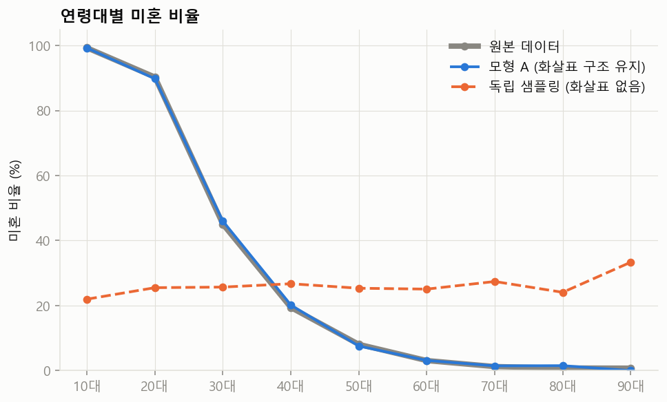
변수를 하나씩 볼 때
| 변수 | 모형 A | 독립 |
|---|---|---|
| 성별 | 0.001 | 0.004 |
| 연령대 | 0.008 | 0.015 |
| 혼인 | 0.002 | 0.003 |
| 가구 | 0.008 | 0.005 |
두 방법 모두 0에 가깝다. 변수를 하나씩만 보면 독립 샘플링도 문제가 없어 보인다.
변수를 둘씩 볼 때
| 변수 쌍 | 모형 A | 독립 |
|---|---|---|
| 연령대 × 혼인 (직접 화살표 있음) | 0.016 | 0.294 |
| 혼인 × 가구 (직접 화살표 있음) | 0.010 | 0.418 |
| 연령대 × 가구 (직접 화살표 없음) | 0.150 | 0.263 |
차이는 여기서 드러난다. 독립 샘플링은 변수 사이의 관계를 모두 잃는다.
현실에 거의 없는 조합(10~20대인데 사별 또는 이혼)의 비율은 원본 0.1%, 모형 A 0.1%, 독립 샘플링 2.25%다. 독립으로 뽑으면 이런 조합이 약 22배로 늘어난다. 합성 데이터의 검증에서 주변분포와 결합 구조를 따로 봐야 하는 이유다.
화살표가 없는 곳은 재현되지 않는다
위 표에서 모형 A도 연령대 × 가구 쌍은 거리가 0.150로 크다. 이 쌍에는 직접 화살표가 없기 때문이다. 모형 A에서 연령대는 혼인 상태를 거쳐서만 가구 유형에 영향을 준다. 그런데 현실에서는 혼인 상태가 같아도 나이에 따라 가구가 다르다. 같은 미혼이라도 19세는 대부분 부모와 살고 30대는 혼자 사는 사람이 많다.
그래서 연령대 → 가구 화살표를 하나 추가한 모형 B를 만들었다. 가구 유형의 확률표가 P(가구 | 혼인)에서 P(가구 | 혼인, 연령대)로 바뀐다. 부모가 둘이므로 줄의 수가 4줄에서 36줄로 늘어난다.
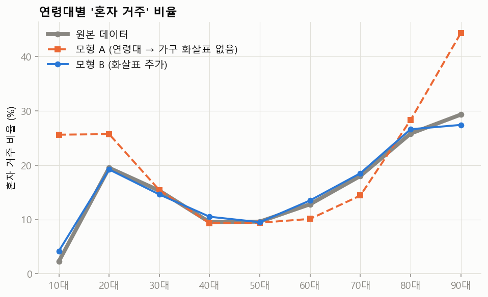
| 연령대 | 원본 (%) | 모형 A (%) | 모형 B (%) |
|---|---|---|---|
| 10대 | 2.3 | 25.6 | 4.2 |
| 20대 | 19.5 | 25.7 | 19.2 |
| 30대 | 15.3 | 15.4 | 14.6 |
| 40대 | 9.5 | 9.3 | 10.5 |
| 50대 | 9.6 | 9.4 | 9.5 |
| 60대 | 12.8 | 10.1 | 13.5 |
| 70대 | 18.0 | 14.4 | 18.5 |
| 80대 | 25.8 | 28.3 | 26.6 |
| 90대 | 29.3 | 44.3 | 27.4 |
| 모형 | 구조 | 확률표의 칸 수 | 연령대 × 가구의 거리 |
|---|---|---|---|
| 독립 샘플링 | 화살표 없음 | 22 | 0.263 |
| 모형 A | 성별 → 연령대 → 혼인 → 가구 | 84 | 0.150 |
| 모형 B | 모형 A에 연령대 → 가구 추가 | 308 | 0.028 |
| 결합분포 전체 | 모든 조합을 한 표에 | 504 | — |
같은 크기의 표본을 원본에서 그냥 뽑아도 거리는 0.026이다. 표본 오차만으로 생기는 값이다. 모형 B의 0.028은 이 수준에 도달했다.
- 모형에 없는 화살표는 데이터에도 없다. 화살표 하나를 추가하자 거리가 0.150에서 0.028로 줄었다. 선행 감사가 찾은 "주거 형태가 가구 구성과 무관하다"는 약점은 NVIDIA의 모형에 그 화살표가 없었다는 뜻으로 읽을 수 있다.
- 화살표에는 비용이 든다. 확률표의 칸이 84개에서 308개로 늘었다. 화살표를 모두 넣으면 결합분포 전체(504칸)와 같아져 모형을 쓰는 이점이 사라진다.
- 칸을 채울 통계가 있어야 한다. 이 실습은 데이터에서 직접 세었지만 실제 설계자는 공식 통계에 의존한다. "혼인 상태 × 연령대 × 가구 유형"의 3차원 교차표가 공표돼 있지 않으면 그 화살표는 넣고 싶어도 넣지 못한다. 어떤 화살표를 넣을지는 공표된 통계가 정한다.
4단계. 뽑힌 값을 프롬프트로 바꾼다
여기까지가 실제 파이프라인의 샘플러 컬럼에 해당한다. 다음은 LLM 컬럼이다. 뽑힌 값을 지시문에 끼워 넣어 LLM에게 서술문을 쓰게 한다. 위에서 추적한 인물을 지시문으로 바꾸면 아래와 같다. 이 실습에서는 LLM을 호출하지 않았고, NVIDIA의 실제 프롬프트는 비공개다.
다음 조건의 한국인 한 사람을 상상해 직업 페르소나를 두 문장으로 써라. - 성별: 여자 - 연령대: 20대 - 혼인 상태: 미혼 - 가구 유형: 기타2세대 조건과 모순되는 내용은 쓰지 말고, 장점 하나와 인간적인 약점 하나를 넣어라.
축소 모형과 실제 파이프라인의 차이
| 항목 | 이 실습의 축소 모형 | NVIDIA의 실제 파이프라인 |
|---|---|---|
| 변수 | 4개 | 인구통계 변수 12개와 이름 |
| 확률표의 출처 | 완성된 데이터에서 직접 셈 | KOSIS, 대법원, 건강보험공단 등의 공식 통계 |
| 그래프 구조 | 직접 정한 사슬 하나 | 비공개. 선행 감사가 데이터에서 직접 관계 12~23개를 추정 |
| 범주 수 | 가장 많은 변수가 9개 | 직업 2,120개, 시군구 252개 |
| 뽑은 뒤의 단계 | 프롬프트 문자열까지만 | LLM이 서술문 13개를 쓰고, 규칙과 LLM 심사로 거름 |
원리는 같다. 실제 모형은 변수가 많고 확률표를 외부 통계로 채운다는 점이 다르다. 수준별 직무 페르소나를 만들 때도 같은 구조를 쓴다. "수준"이라는 변수를 하나 추가하고, 그 부모를 무엇으로 둘지와 확률표를 어떤 통계로 채울지를 정하면 된다.
이 결과를 만든 코드 보기: scripts/10_toy_pgm.py — 확률표 만들기, 조상 샘플링, 한 사람 추적, 모형 A와 B 비교, 프롬프트 생성
"""10단계: 생성 원리 미니 실습. 확률적 그래프 모델(PGM)을 손으로 만들어 본다.
NVIDIA의 실제 모델은 비공개다. 여기서는 같은 '원리'를 변수 4개로 줄여 흉내 낸다.
성별 -> 연령대 -> 혼인상태 -> 가구유형
순서
1) 실제 데이터에서 조건부 확률표(CPT)를 계산한다. 데이터 -> 확률표
2) 그 확률표로 조상 샘플링을 해서 가상 인물을 뽑는다. 확률표 -> 새 데이터
3) 화살표를 모두 끊고(독립 샘플링) 뽑은 것과 비교한다.
4) 뽑힌 한 사람을 LLM에게 줄 프롬프트 문자열로 바꾼다. (LLM은 부르지 않는다)
numpy와 파이썬 기본 자료형(딕셔너리)만 쓴다. polars는 데이터를 읽고 세는 데만 쓴다.
"""
import json
import os
from collections import Counter
import numpy as np
import polars as pl
import config as C
plt = C.setup_matplotlib()
rng = np.random.default_rng(C.SEED) # 시드를 고정해 몇 번을 돌려도 같은 결과가 나온다
TOY_N = int(os.environ.get("NPK_TOY_N", "10000")) # 뽑을 가상 인물 수
# ---------------------------------------------------------------- 0. 재료 준비
df = (
pl.scan_parquet(C.parquet_glob())
.select("sex", "age", "marital_status", "family_type")
.collect()
.with_columns(((pl.col("age") // 10) * 10).cast(pl.String).add("대").alias("age_band")) # 23 -> "20대"
.with_columns(pl.when(pl.col("age") < 20).then(pl.lit("10대")).otherwise(pl.col("age_band")).alias("age_band"))
)
# 가구유형은 39개나 된다. 많은 순으로 6개만 남기고 나머지는 '기타'로 합쳐 표를 작게 만든다.
top_family = df.group_by("family_type").len().sort("len", descending=True).head(6)["family_type"].to_list()
df = df.with_columns(
pl.when(pl.col("family_type").is_in(top_family)).then(pl.col("family_type")).otherwise(pl.lit("기타")).alias("family")
).rename({"marital_status": "marital"})
rows = df.select("sex", "age_band", "marital", "family").rows() # [(성별, 연령대, 혼인, 가구), ...]
print("원본 행 수:", len(rows))
# ---------------------------------------------------------------- 1. 데이터 -> 확률표
def marginal(values):
"""값들의 비율. 예: {'남자': 0.497, '여자': 0.503}"""
c = Counter(values)
total = sum(c.values())
return {k: v / total for k, v in c.items()}
def conditional(pairs):
"""(부모 값, 자식 값) 쌍에서 조건부 확률표를 만든다. 결과: {부모 값: {자식 값: 확률}}"""
by_parent = {}
for parent, child in pairs:
by_parent.setdefault(parent, []).append(child)
return {parent: marginal(children) for parent, children in by_parent.items()}
P_SEX = marginal(r[0] for r in rows) # P(성별)
P_AGE_GIVEN_SEX = conditional((r[0], r[1]) for r in rows) # P(연령대 | 성별)
P_MARITAL_GIVEN_AGE = conditional((r[1], r[2]) for r in rows) # P(혼인 | 연령대)
P_FAMILY_GIVEN_MARITAL = conditional((r[2], r[3]) for r in rows) # P(가구 | 혼인)
print("\n[확률표 예시] P(혼인 | 연령대)")
for band in ["20대", "50대", "80대"]:
print(" ", band, {k: round(v, 3) for k, v in sorted(P_MARITAL_GIVEN_AGE[band].items(), key=lambda x: -x[1])})
# ---------------------------------------------------------------- 2. 확률표 -> 새 데이터 (조상 샘플링)
def draw(dist):
"""확률표 한 줄({값: 확률})에서 값 하나를 뽑는다."""
keys = list(dist)
return keys[rng.choice(len(keys), p=[dist[k] for k in keys])]
def sample_pgm():
"""부모부터 차례로 뽑는다. 앞에서 뽑힌 값이 다음 확률표의 '줄'을 고른다."""
sex = draw(P_SEX)
age = draw(P_AGE_GIVEN_SEX[sex]) # 성별에 맞는 줄에서 연령대를 뽑는다
marital = draw(P_MARITAL_GIVEN_AGE[age]) # 연령대에 맞는 줄에서 혼인을 뽑는다
family = draw(P_FAMILY_GIVEN_MARITAL[marital]) # 혼인에 맞는 줄에서 가구를 뽑는다
return (sex, age, marital, family)
# 비교용: 화살표를 모두 끊는다. 변수마다 전체 비율만 보고 따로따로 뽑는다.
P_AGE = marginal(r[1] for r in rows)
P_MARITAL = marginal(r[2] for r in rows)
P_FAMILY = marginal(r[3] for r in rows)
def sample_independent():
return (draw(P_SEX), draw(P_AGE), draw(P_MARITAL), draw(P_FAMILY))
pgm = [sample_pgm() for _ in range(TOY_N)]
ind = [sample_independent() for _ in range(TOY_N)]
# ---------------------------------------------------------------- 3. 비교
def tvd(p, q):
"""총변동거리. 두 분포가 얼마나 다른지. 0이면 같고 1이면 완전히 다르다."""
keys = set(p) | set(q)
return 0.5 * sum(abs(p.get(k, 0.0) - q.get(k, 0.0)) for k in keys)
def joint(data, i, j):
"""두 변수의 결합분포. 예: ('20대', '미혼')이 전체의 몇 %인가."""
return marginal((r[i], r[j]) for r in data)
def odd_rate(data):
"""현실에서 거의 없는 조합의 비율: 10~20대인데 사별 또는 이혼."""
n = sum(1 for r in data if r[1] in ("10대", "20대") and r[2] in ("사별", "이혼"))
return n / len(data) * 100
IDX = {"sex": 0, "age": 1, "marital": 2, "family": 3}
result = {"toy_n": TOY_N, "marginal_tvd": {}, "joint_tvd": {}, "odd_rate_pct": {}}
for name, i in IDX.items(): # 변수 하나씩의 분포는 두 방법 모두 원본과 비슷해야 한다
orig = marginal(r[i] for r in rows)
result["marginal_tvd"][name] = {
"pgm": round(tvd(orig, marginal(r[i] for r in pgm)), 4),
"independent": round(tvd(orig, marginal(r[i] for r in ind)), 4),
}
# 변수 '쌍'의 분포에서 차이가 난다. 마지막 쌍(연령대x가구)은 우리 모형에 직접 화살표가 없는 쌍이다.
for a, b in [("age", "marital"), ("marital", "family"), ("age", "family")]:
orig = joint(rows, IDX[a], IDX[b])
result["joint_tvd"][f"{a} x {b}"] = {
"pgm": round(tvd(orig, joint(pgm, IDX[a], IDX[b])), 4),
"independent": round(tvd(orig, joint(ind, IDX[a], IDX[b])), 4),
}
result["odd_rate_pct"] = {"original": round(odd_rate(rows), 3), "pgm": round(odd_rate(pgm), 3),
"independent": round(odd_rate(ind), 3)}
print("\n[변수 하나씩] 원본과의 거리(TVD):", result["marginal_tvd"])
print("[변수 쌍] 원본과의 거리(TVD):", result["joint_tvd"])
print("[10~20대인데 사별·이혼인 비율 %]:", result["odd_rate_pct"])
# 그림: 연령대별 미혼 비율. 의존 구조를 지키면 원본 곡선을 따라가고, 끊으면 평평해진다.
bands = sorted(P_AGE, key=lambda b: int(b[:-1]))
def single_rate(data):
out = []
for b in bands:
grp = [r for r in data if r[1] == b]
out.append(sum(1 for r in grp if r[2] == "미혼") / len(grp) * 100 if grp else 0.0)
return out
curves = {"원본 데이터": single_rate(rows), "모형 A (화살표 구조 유지)": single_rate(pgm),
"독립 샘플링 (화살표 없음)": single_rate(ind)}
result["single_rate_by_age"] = {"bands": bands, **{k: [round(v, 1) for v in vals] for k, vals in curves.items()}}
fig, ax = plt.subplots(figsize=(8, 4.6))
styles = [(C.COLOR_MUTED, "-", 4.0), (C.COLOR_1, "-", 2.0), (C.COLOR_2, "--", 2.0)] # 색과 선 모양을 함께 달리한다
for (label, vals), (color, ls, lw) in zip(curves.items(), styles):
ax.plot(bands, vals, color=color, linestyle=ls, linewidth=lw, marker="o", markersize=5, label=label)
ax.set_ylabel("미혼 비율 (%)")
ax.set_ylim(0, 105)
ax.set_title("연령대별 미혼 비율", loc="left", fontweight="bold")
ax.legend(frameon=False)
fig.savefig(C.FIG_DIR / "toy_pgm_single_rate.png")
plt.close(fig)
# ---------------------------------------------------------------- 4. 인구통계 변수 -> 프롬프트
def build_prompt(person):
"""샘플링된 인구통계 변수를 LLM에게 줄 지시문으로 바꾼다. 실제 파이프라인의 'LLM 컬럼'이 하는 일이다.
NVIDIA가 쓴 실제 프롬프트는 비공개다. 이것은 원리를 보여 주는 예시일 뿐이다.
"""
sex, age, marital, family = person
return (
"다음 조건의 한국인 한 사람을 상상해 직업 페르소나를 두 문장으로 써라.\n"
f"- 성별: {sex}\n- 연령대: {age}\n- 혼인 상태: {marital}\n- 가구 유형: {family}\n"
"조건과 모순되는 내용은 쓰지 말고, 장점 하나와 인간적인 약점 하나를 넣어라."
)
example_people = pgm[:3]
result["example_people"] = [list(p) for p in example_people]
result["example_prompt"] = build_prompt(example_people[0])
result["cpt_marital_given_age"] = {b: {k: round(v, 3) for k, v in P_MARITAL_GIVEN_AGE[b].items()} for b in bands}
print("\n[뽑힌 가상 인물 3명]", example_people)
print("\n[첫 번째 인물의 프롬프트]\n" + result["example_prompt"])
# ---------------------------------------------------------------- 5. 확률표가 만들어지는 과정을 숫자로 남긴다
# 확률표의 한 줄은 "그 부모 값을 가진 행만 모아서, 자식 값별로 센 뒤, 그 줄의 합으로 나눈 것"이다.
FAMILY_ORDER = sorted(P_FAMILY, key=lambda k: -P_FAMILY[k])
MARITAL_ORDER = ["미혼", "배우자있음", "이혼", "사별"]
worked = {}
for band in ["20대", "80대"]:
cnt = Counter(r[2] for r in rows if r[1] == band) # 이 연령대인 사람들의 혼인 상태를 센다
total = sum(cnt.values())
worked[band] = {"n": total, "counts": {m: cnt.get(m, 0) for m in MARITAL_ORDER},
"probs": {m: round(cnt.get(m, 0) / total, 4) for m in MARITAL_ORDER}}
result["worked_cpt"] = worked
result["original_preview"] = [list(r) for r in rows[:5]] # 원본이 어떻게 생겼는지 보여 줄 다섯 행
result["n_original"] = len(rows)
result["cpt_sex"] = {k: round(v, 4) for k, v in P_SEX.items()}
result["cpt_age_given_sex"] = {s: {b: round(P_AGE_GIVEN_SEX[s].get(b, 0.0), 4) for b in bands} for s in P_SEX}
result["cpt_family_given_marital"] = {m: {f: round(P_FAMILY_GIVEN_MARITAL[m].get(f, 0.0), 4) for f in FAMILY_ORDER}
for m in MARITAL_ORDER}
result["family_order"] = FAMILY_ORDER
# ---------------------------------------------------------------- 6. 한 사람이 뽑히는 과정을 따라가 본다
# draw()가 안에서 하는 일을 풀어 쓴 것이다. 0과 1 사이의 난수 u를 하나 뽑고,
# 확률을 차례로 쌓아 만든 구간 중 u가 떨어진 구간의 값을 고른다. 확률이 큰 값일수록 구간이 넓어 자주 뽑힌다.
trace_rng = np.random.default_rng(C.SEED + 1)
def draw_traced(dist, order):
u = float(trace_rng.random())
lo = 0.0
intervals, chosen = [], None
for k in order:
p = dist.get(k, 0.0)
hi = lo + p
hit = chosen is None and u < hi
if hit:
chosen = k
intervals.append({"value": k, "p": round(p, 4), "lo": round(lo, 4), "hi": round(hi, 4), "hit": hit})
lo = hi
return chosen or order[-1], round(u, 4), intervals
trace = []
v_sex, u, iv = draw_traced(P_SEX, list(P_SEX))
trace.append({"step": "성별", "table": "P(성별)", "row": "—", "u": u, "intervals": iv, "chosen": v_sex})
v_age, u, iv = draw_traced(P_AGE_GIVEN_SEX[v_sex], bands)
trace.append({"step": "연령대", "table": "P(연령대 | 성별)", "row": v_sex, "u": u, "intervals": iv, "chosen": v_age})
v_mar, u, iv = draw_traced(P_MARITAL_GIVEN_AGE[v_age], MARITAL_ORDER)
trace.append({"step": "혼인 상태", "table": "P(혼인 | 연령대)", "row": v_age, "u": u, "intervals": iv, "chosen": v_mar})
v_fam, u, iv = draw_traced(P_FAMILY_GIVEN_MARITAL[v_mar], FAMILY_ORDER)
trace.append({"step": "가구 유형", "table": "P(가구 | 혼인)", "row": v_mar, "u": u, "intervals": iv, "chosen": v_fam})
result["trace"] = trace
result["trace_prompt"] = build_prompt((v_sex, v_age, v_mar, v_fam))
print("\n[한 사람 추적]", [(t["step"], t["u"], t["chosen"]) for t in trace])
# ---------------------------------------------------------------- 7. 화살표를 하나 더 넣으면 어떻게 되나
# 모형 A: 성별 -> 연령대 -> 혼인 -> 가구 (위에서 쓴 것)
# 모형 B: 모형 A + '연령대 -> 가구' 화살표. 가구의 부모가 (혼인, 연령대) 둘이 된다.
P_FAMILY_GIVEN_MARITAL_AGE = conditional(((r[2], r[1]), r[3]) for r in rows) # P(가구 | 혼인, 연령대)
def sample_pgm_b():
sex = draw(P_SEX)
age = draw(P_AGE_GIVEN_SEX[sex])
marital = draw(P_MARITAL_GIVEN_AGE[age])
family = draw(P_FAMILY_GIVEN_MARITAL_AGE[(marital, age)]) # 부모 두 개의 값으로 줄을 고른다
return (sex, age, marital, family)
pgm_b = [sample_pgm_b() for _ in range(TOY_N)]
n_sex, n_age, n_mar, n_fam = len(P_SEX), len(bands), len(MARITAL_ORDER), len(FAMILY_ORDER)
cells_a = n_sex + n_sex * n_age + n_age * n_mar + n_mar * n_fam
cells_b = n_sex + n_sex * n_age + n_age * n_mar + n_mar * n_age * n_fam
cells_full = n_sex * n_age * n_mar * n_fam
orig_af = joint(rows, IDX["age"], IDX["family"])
# 같은 크기의 표본을 원본에서 그냥 뽑아도 0이 되지는 않는다. 그 값이 '표본 오차만으로 생기는 거리'의 기준이 된다.
resample = [rows[i] for i in rng.integers(0, len(rows), TOY_N)]
result["model_compare"] = {
"cells": {"independent": n_sex + n_age + n_mar + n_fam, "model_a": cells_a, "model_b": cells_b, "full_joint": cells_full},
"age_x_family_tvd": {
"independent": result["joint_tvd"]["age x family"]["independent"],
"model_a": result["joint_tvd"]["age x family"]["pgm"],
"model_b": round(tvd(orig_af, joint(pgm_b, IDX["age"], IDX["family"])), 4),
"resample_floor": round(tvd(orig_af, joint(resample, IDX["age"], IDX["family"])), 4),
},
}
def alone_rate(data, band):
"""특정 연령대에서 '혼자 거주'의 비율(%)."""
grp = [r for r in data if r[1] == band]
return round(sum(1 for r in grp if r[3] == "혼자 거주") / len(grp) * 100, 1) if grp else 0.0
result["alone_by_age"] = {
"bands": bands,
"original": [alone_rate(rows, b) for b in bands],
"model_a": [alone_rate(pgm, b) for b in bands],
"model_b": [alone_rate(pgm_b, b) for b in bands],
}
print("[모형 비교] 칸 수:", result["model_compare"]["cells"])
print("[모형 비교] 연령대 x 가구의 거리:", result["model_compare"]["age_x_family_tvd"])
fig, ax = plt.subplots(figsize=(8, 4.6))
series = [("원본 데이터", result["alone_by_age"]["original"], C.COLOR_MUTED, "-", 4.0, "o"),
("모형 A (연령대 → 가구 화살표 없음)", result["alone_by_age"]["model_a"], C.COLOR_2, "--", 2.0, "s"),
("모형 B (화살표 추가)", result["alone_by_age"]["model_b"], C.COLOR_1, "-", 2.0, "o")]
for label, vals, color, ls, lw, mk in series:
ax.plot(bands, vals, color=color, linestyle=ls, linewidth=lw, marker=mk, markersize=5, label=label)
ax.set_ylabel("혼자 거주 비율 (%)")
ax.set_ylim(bottom=0)
ax.set_title("연령대별 '혼자 거주' 비율", loc="left", fontweight="bold")
ax.legend(frameon=False)
fig.savefig(C.FIG_DIR / "toy_pgm_alone_rate.png")
plt.close(fig)
out = C.PROCESSED_DIR / "summary_toy_pgm.json"
out.write_text(json.dumps(result, ensure_ascii=False, indent=2), encoding="utf-8")
print("\n저장:", out)
4확률적 그래프 모델 기초와 선행 감사 읽기
두 주제는 서로 거울이다. 1부의 확률적 그래프 모델은 그래프에서 데이터를 만드는 방향이고, 2부의 선행 감사는 데이터에서 그래프를 거꾸로 추정하는 방향이다. 1부를 알면 2부의 3단계가 읽힌다.
1부. 확률적 그래프 모델 기초
1. 결합분포는 표 하나로 적을 수 없다
가상 인물을 뽑으려면 "모든 변수 조합의 확률"(결합분포)이 필요하다. 이 데이터의 인구통계 변수 11개로 조합의 수를 세면 약 21조 칸이다. 데이터는 100만 행뿐이다. 칸마다 확률을 적을 통계도 없고, 있다 해도 거의 모든 칸이 비어 있다.
해결책은 "모든 변수가 모든 변수와 직접 관련된 것은 아니다"라는 사실을 이용하는 것이다. 주거 형태를 정할 때 성별까지 볼 필요는 없다. 이렇게 누가 누구에게 직접 영향을 주는지만 골라 적으면 표가 작아진다.
2. 베이지안 네트워크는 화살표 그림과 작은 표들로 이루어진다
베이지안 네트워크는 두 가지로 이루어진다.
- 그림: 변수를 점으로, 직접 영향을 화살표로 그린다. 화살표를 따라가다 제자리로 돌아오는 길은 없어야 한다(방향성 비순환 그래프, DAG).
- 표: 변수마다 "부모가 이 값일 때 내가 각 값을 가질 확률"을 적은 조건부 확률표를 하나씩 붙인다. 부모가 없는 변수는 그냥 비율표다.
그러면 전체 결합분포는 작은 표들의 곱이 된다.
P(성별, 연령대, 혼인, 가구) = P(성별) × P(연령대 | 성별) × P(혼인 | 연령대) × P(가구 | 혼인)
scripts/10_toy_pgm.py의 모형이 바로 이것이다. 필요한 숫자의 개수를 세어 보면 차이가 보인다.
| 방식 | 적어야 할 칸 수 |
|---|---|
| 결합분포를 통째로 | 2 × 9 × 4 × 7 = 504 |
| 화살표를 따라 나눠서 | 2 + (2×9) + (9×4) + (4×7) = 84 |
변수 4개에서는 6배 차이지만, 변수가 늘수록 차이는 기하급수로 벌어진다. 더 중요한 점은 작은 표는 공식 통계로 채울 수 있다는 것이다. "연령대별 혼인 상태"는 KOSIS에 있다. "성별 × 연령 × 혼인 × 가구 × 학력 × 직업 × 지역"의 교차표는 어디에도 없다. NVIDIA가 확률적 그래프 모델을 쓴 실용적인 이유다.
대가도 있다. 화살표를 그리지 않은 곳은 "직접 관계가 없다"고 선언한 것이다. 그 선언이 틀리면 데이터도 틀린다.
3. 조건부 독립은 직접 관계와 간접 관계를 가른다
- 독립: X를 알아도 Y에 대해 새로 아는 게 없다.
- 조건부 독립: Z를 이미 아는 상태라면, X를 더 알아도 Y에 대해 새로 아는 게 없다.
X ⊥ Y | Z라고 쓴다.
"관련 있어 보인다"와 "직접 연결돼 있다"를 가르는 것이 조건부 독립이다. 세 변수가 만나는 모양은 세 가지뿐이고, 각각 성질이 다르다.
| 모양 | 그림 | Z를 모를 때 X와 Y | Z를 알 때 X와 Y | 이 데이터의 예 |
|---|---|---|---|---|
| 연쇄 | X → Z → Y | 관련 있음 | 독립 | 나이 → 학력 → 전공 |
| 분기 (공통 원인) | X ← Z → Y | 관련 있음 | 독립 | 혼인 ← 나이 → 학력 |
| 충돌 (공통 결과) | X → Z ← Y | 독립 | 관련 생김 | 성별 → 직업 ← 학력 |
연쇄와 분기는 직관적이다. X와 Y 사이의 정보가 모두 Z를 거쳐 전달되므로, Z의 값을 알면 X와 Y는 더 이상 서로에 대한 정보를 주지 않는다.
충돌은 반대라서 헷갈린다. 예를 들어 성별과 학력이 서로 무관하더라도, "간호사"라는 직업을 알고 나면 둘이 연결된다. 결과를 알면 원인들끼리 서로를 설명하게 되는 현상이다. 연구에서 "특정 직업만 뽑아 분석"할 때 없던 상관이 생기는 선택 편향이 바로 이것이다. 직무 페르소나를 만들려고 특정 직업만 걸러 낼 때 기억해야 할 점이다.
이 데이터에서 직접 확인한 결과는 아래와 같다. 상호정보량은 "X를 알면 Y에 대해 얼마나 알게 되나"를 재는 양이고, 0이면 독립이다.
| 모양 | 변수 쌍 | 상호정보량 | 조건으로 건 변수 | 조건부 상호정보량 | 감소 | 풀이 |
|---|---|---|---|---|---|---|
| 분기 (공통 원인) | 혼인 ~ 학력 | 0.1045 | 나이 | 0.0037 | 96% | 혼인과 학력은 관련 있어 보인다. 하지만 둘 다 나이의 결과다. 나이를 알면 관계가 거의 사라진다. |
| 연쇄 | 나이 ~ 전공 | 0.0681 | 학력 | 0.0005 | 99% | 나이 → 학력 → 전공. 나이는 학력을 거쳐서만 전공에 영향을 준다. 학력을 알면 나이는 더 알려 줄 게 없다. |
| 연쇄 (지리 계층) | 주거 ~ 시도 | 0.0753 | 시군구 | -0.0000 | 100% | 시도 → 시군구 → 주거. 시군구를 알면 시도는 군더더기다. |
| 직접 연결 (대조군) | 나이 ~ 혼인 | 0.3215 | 학력 | 0.2206 | 31% | 나이와 혼인은 직접 이어져 있다. 다른 변수를 알아도 관계가 그대로 남는다. |
| 직접 연결 (대조군) | 혼인 ~ 가구 유형 | 0.7505 | 나이 | 0.5383 | 28% | 혼인과 가구 유형도 직접 이어져 있다. 나이를 알아도 관계가 남는다. |
| 애초에 독립 | 주거 ~ 가구 유형 | 0.0021 | — | — | — | 주거 형태와 가구 유형은 조건을 걸기 전부터 거의 독립이다. 이 데이터의 약점이다. |
혼인과 학력은 꽤 관련 있어 보이지만, 나이를 알고 나면 관계의 97%가 사라진다. 둘 다 나이의 결과일 뿐이다. 반대로 나이와 혼인은 다른 변수를 알아도 관계가 남는다. 직접 연결돼 있다는 뜻이다.
4. 조상 샘플링으로 그래프에서 사람을 뽑는다
- 화살표 순서대로 변수를 줄 세운다. 부모가 항상 자식보다 앞에 오게 한다(위상 정렬).
- 부모가 없는 변수부터 비율표로 값을 뽑는다.
- 다음 변수는 이미 뽑힌 부모의 값에 해당하는 줄을 조건부 확률표에서 골라, 그 줄의 확률로 뽑는다.
- 끝까지 가면 한 사람이 완성된다. 100만 번 반복한다.
성질은 세 가지를 기억하면 된다.
- 정확하다: 근사가 아니다. 뽑힌 사람들은 표들의 곱이 정의하는 결합분포를 정확히 따른다.
- 빠르다: 한 사람당 변수 개수만큼만 난수를 뽑는다.
- 앞에서 뒤로만 간다: "대리급 개발자만 뽑아 줘"처럼 아래쪽 변수를 고정하고 위쪽을 뽑는 것은 바로 못 한다. 가장 단순한 방법은 많이 뽑은 뒤 조건에 맞는 사람만 남기는 것이다(기각 샘플링). 이미 100만 명이 뽑혀 있는 이 데이터에서는
filter한 줄이 그 역할을 한다.
실습에서 본 교훈도 여기서 나온다. 앞에서 만든 축소 모형에는 "연령대 → 가구" 화살표가 없었다. 그래서 나이와 가구의 관계는 혼인을 거쳐 전해지는 만큼만 재현됐고, 원본과의 거리가 다른 쌍의 10배였다. 모형에 없는 화살표는 데이터에도 없다.
2부. 선행 독립 감사 읽기
Kim Chang-Eop의 저장소 eopchang/nemotron-personas-korea-audit는 인구통계 변수 11개를 세 단계로 검증했다. 단계가 올라갈수록 더 깊은 구조를 본다.
| 단계 | 질문 | 1부와의 연결 |
|---|---|---|
| 1단계 | 변수를 하나씩 보면 공식 통계와 같은가? | 표 하나하나가 맞는가 |
| 2단계 | 변수를 둘씩 보면 관계가 그럴듯한가? | 화살표가 있는 곳에 관계가 있는가 |
| 3단계 | 어떤 관계가 직접이고 어떤 것이 매개된 것인가? | 데이터에서 그래프를 거꾸로 추정 |
먼저 알아 둘 지표
| 지표 | 한 줄 뜻 | 읽는 법 |
|---|---|---|
| 총변동거리 (TVD) | 두 분포의 비율 차이 절댓값 합의 절반 | 0.01 이하 사실상 같음, 0.05 이하 양호, 0.10 이상 점검 필요 |
| Cramér V | 카이제곱을 0~1로 바꾼 연관 강도 | 0.1 중간, 0.3 강함 |
| 정규화 상호정보량 (NMI) | 상호정보량을 0~1로 맞춘 값 | 1이면 한쪽이 다른 쪽을 완전히 결정 |
| Theil U(Y|X) | X를 알면 Y의 불확실성이 몇 % 줄어드나 | 방향이 있다. U(Y|X)와 U(X|Y)가 다르다 |
| 점별 상호정보량 (PMI) | 특정 칸이 독립일 때보다 얼마나 자주 나오나 | 양수면 더 자주, 음수면 더 드물게 |
| 조건부 상호정보량 (CMI) | Z를 안 뒤에도 남는 X와 Y의 관계 | 0에 가까우면 조건부 독립 |
감사가 거듭 강조하는 원칙이 있다. 100만 행이면 어떤 차이든 통계적으로 유의하다(p값이 전부 0). 그래서 p값이 아니라 효과크기로 읽어야 한다. 표본이 큰 데이터를 다룰 때 늘 적용되는 원칙이다.
1단계는 변수를 하나씩 본다 (주변분포)
| 변수 | 비교 기준 | TVD | 평가 |
|---|---|---|---|
| 성별 | 통계청 추계인구 19세 이상, 2024 | 0.0006 | 사실상 완벽 |
| 시도 | 행안부 주민등록 2024.12 | 0.0055 | 17개 시도 모두 ±0.24%p 이내 |
| 학력 | 인구주택총조사 25세 이상, 2020 | 0.044 | 양호 |
| 혼인 | 인구주택총조사 15세 이상, 2020 | 0.054 | 양호 |
| 주거 | 감사자가 직접 추정한 개인 단위 기준 | 0.084 | 약한 격차, 단독주택 −8%p |
읽을 때 챙길 점은 두 가지다.
- 기준 모집단이 다르다. 데이터는 19세 이상인데 학력 기준은 25세 이상, 혼인 기준은 15세 이상이다. 감사는 차이의 방향이 모집단 차이로 설명된다고 봤지만, 보정해서 다시 계산하지는 않았다. 학력은 오히려 보정하면 격차가 더 커질 것이라고 적었다.
- 주거는 단위가 다르다. 공식 통계는 가구 단위, 이 데이터는 개인 단위다. 감사자가 가구원 수로 가중해 개인 단위 기준을 직접 추정했고, 그 추정에 ±2%p 오차가 있다고 밝혔다.
2단계는 변수를 둘씩 본다 (55쌍 전부)
잘 재현된 것들이다.
- 결정적 제약: 시군구는 시도를 100% 결정한다. "배우자있음"인 사람의 가구에는 반드시 배우자가 있다.
- 인구학 곡선: 19~24세 미혼 95.4%, 75~84세 사별 42.6%, 85세 이상 사별 70.7%.
- 학력의 세대 차이: 25~34세는 4년제 51.6%, 85세 이상은 무학과 초등학교가 76.4%.
- 성별과 전공: 공학 86.6% 남성, 보건·복지 28.1% 남성. 카드의 "독립 가정"은 세부 직업 배정에만 해당하고, 성별과 전공의 관계는 모델에 들어 있다.
- 군 인력: 병사 평균 25세에 여성 0%, 부사관과 장교는 여성 약 11%. 한국군 구성과 맞는다.
Theil U의 비대칭에서 "누가 누구를 함의하는가"를 읽는 대목이 특히 배울 만하다. 직업을 알면 병역이 100% 정해지지만(U = 1.000), 병역을 알아도 직업은 거의 모른다(U = 0.008).
감사자가 남긴 단서도 있다. "배우자있음이면 혼자 거주는 0%"라는 제약은 깔끔하지만, 현실의 주말부부와 기러기 가족을 지워 버린다.
3단계는 데이터에서 그래프를 거꾸로 추정한다
1부의 조건부 독립을 그대로 쓴다. 방법은 PC 알고리즘의 축약판이다.
- 모든 쌍을 연결해 놓고 시작한다.
- 쌍마다 다른 변수 하나 또는 둘을 조건으로 걸어 조건부 상호정보량을 잰다.
- 어떤 조건에서든 0.005 nats 아래로 떨어지면 그 선을 지운다("매개된 관계").
- 끝까지 남은 선이 "직접 관계"다.
결과는 직접 관계 23개, 매개된 관계 14개, 애초에 독립 18개다. 그런데 감사자는 여기서 멈추지 않고 자기 결과를 스스로 의심했다. 이 부분이 이 감사의 가장 좋은 점이다.
- 과대 추정 보정: 범주가 많은 변수는 상호정보량이 실제보다 크게 추정된다. 크기는 대략
(k−1)(m−1)/(2N)이다. 직업(2,120종) × 시군구(252개)는 이 값만 0.27 nats로, 기준선 0.005의 50배가 넘는다. 실제로 이 쌍의 상호정보량 0.597 중 97%가 과대 추정분이었다. - 순열 검정: 한 변수를 무작위로 섞어 "관계가 없을 때도 나오는 값"을 100번 구하고, 관측값이 그 2배를 넘는지 봤다. 23개 중 12개만 통과했다. 탈락한 11개는 전부 직업 또는 시군구가 든 쌍이다.
- 기준선 민감도: 기준선을 100배 범위로 바꾸면 직접 관계는 32개에서 13개 사이로 움직인다. 핵심 결론은 어느 기준에서도 유지됐다.
- 방향은 알 수 없다: 데이터만으로는 선의 유무까지만 알 수 있다. 화살표 방향은 시간 순서나 상식 같은 추가 가정이 있어야 정해진다.
가장 단단한 결론은 주거 형태의 분리다. 시군구만으로 주거를 예측한 모형에 나이·성별·혼인·가구·학력·전공·직업을 전부 더해도 정보가 늘지 않았다(−0.008 nats). 나이 8구간 × 혼인 4종의 32개 칸에서 아파트 비율이 모두 56.6~64.3% 안에 있다.
외부 자료와의 대조도 일부 했다.
| 비교 | 결과 |
|---|---|
| 나이 × 성별 × 미혼율 (2020 총조사) | 8개 칸 모두 ±4%p 이내 |
| 시도 × 주거 | 시도별로는 ±3%p, 전국 합계는 아파트 +9%p |
| 나이 × 성별 × 학력 (2014년 자료) | 60대 초반 여성 중졸 이하가 −44%p. 기준이 10년 전 자료라 세대 교체가 섞여 있지만, 고령층 학력이 실제보다 높게 나왔을 가능성을 새 가설로 남겼다 |
감사가 다루지 않은 것
- 텍스트 13개 필드 전체. 감사의 로드맵에 4단계로 올라 있을 뿐 아직 없다.
- 직업을 한국표준직업분류에 대응시켜 공식 통계와 비교하는 일.
- KOSIS 원자료를 통한 완전한 외부 검증. 지금은 보도자료에 인용된 칸만 비교했다.
직무 페르소나 계획에 주는 시사점
- 직업은 그래프의 중심이다. 직접 관계가 9개로 가장 많다. 거의 모든 사람 속성이 직업으로 모인다.
- 그런데 직업 관련 관계가 가장 덜 검증됐다. 학력 × 직업, 전공 × 직업, 나이 × 직업은 모두 순열 검정에서 탈락한 쪽이다. 관계가 없다는 뜻이 아니라, 범주가 너무 많아 이 방법으로는 확신할 수 없다는 뜻이다. 직군 하나로 좁혀 범주를 줄이면 다시 확인할 수 있다.
- 성별 × 직업은 통과했다. 직업 성별 분리는 믿고 쓸 만하다.
- "무직" 36.7% 외에 "전직 …, 현재 구직중"이라는 직업 문자열이 따로 있다. 직접 확인하니 군 직업에서만 187건이다. 취업자만 고를 때 이 문자열도 걸러야 한다.
- 고령층 학력 상향 가능성은 50~60대 직무 페르소나의 학력 분포를 쓸 때 염두에 둘 점이다.
이 결과를 만든 코드 보기: scripts/11_conditional_independence_demo.py — 상호정보량과 조건부 상호정보량 계산
"""11단계(학습용): 조건부 독립을 이 데이터에서 직접 숫자로 확인한다.
질문: "두 변수가 관련 있어 보인다"와 "두 변수가 직접 연결돼 있다"는 어떻게 다른가?
도구는 두 가지다.
상호정보량 I(X;Y) : X를 알면 Y에 대해 얼마나 알게 되나. 0이면 독립이다.
조건부 상호정보량 I(X;Y|Z) : Z를 이미 아는 상태에서, X가 Y에 대해 '추가로' 알려 주는 양.
0에 가까우면 "Z를 알면 X와 Y는 독립"이다 (조건부 독립, X ⊥ Y | Z).
선행 독립 감사(eopchang)의 3단계가 쓴 방법과 같다. 단위는 nats(자연로그)다.
"""
import json
import numpy as np
import polars as pl
import config as C
COLS = ["sex", "age", "marital_status", "family_type", "housing_type",
"education_level", "bachelors_field", "district", "province"]
df = pl.scan_parquet(C.parquet_glob()).select(COLS).collect()
# 나이는 감사 보고서와 같은 8개 구간으로 나눈다: 19-24 / 25-34 / ... / 85+
df = df.with_columns(
pl.col("age").cut([24, 34, 44, 54, 64, 74, 84],
labels=["19-24", "25-34", "35-44", "45-54", "55-64", "65-74", "75-84", "85+"])
.cast(pl.String).alias("age_bin")
)
N = df.height
def entropy(cols):
"""결합 엔트로피 H(cols). 값들의 조합이 얼마나 다양하게 흩어져 있는지. 조합별 비율 p에 대해 -sum(p log p)."""
counts = df.group_by(cols).len()["len"].to_numpy().astype(float)
p = counts / counts.sum()
return float(-(p * np.log(p)).sum())
def mi(x, y):
"""I(X;Y) = H(X) + H(Y) - H(X,Y)"""
return entropy([x]) + entropy([y]) - entropy([x, y])
def cmi(x, y, z):
"""I(X;Y|Z) = H(X,Z) + H(Y,Z) - H(X,Y,Z) - H(Z). z는 변수 이름의 리스트다."""
return entropy([x] + z) + entropy([y] + z) - entropy([x, y] + z) - entropy(z)
# (X, Y, Z, 구조 이름, 풀이)
CASES = [
("marital_status", "education_level", ["age_bin"], "분기 (공통 원인)",
"혼인과 학력은 관련 있어 보인다. 하지만 둘 다 나이의 결과다. 나이를 알면 관계가 거의 사라진다."),
("age_bin", "bachelors_field", ["education_level"], "연쇄",
"나이 → 학력 → 전공. 나이는 학력을 거쳐서만 전공에 영향을 준다. 학력을 알면 나이는 더 알려 줄 게 없다."),
("housing_type", "province", ["district"], "연쇄 (지리 계층)",
"시도 → 시군구 → 주거. 시군구를 알면 시도는 군더더기다."),
("age_bin", "marital_status", ["education_level"], "직접 연결 (대조군)",
"나이와 혼인은 직접 이어져 있다. 다른 변수를 알아도 관계가 그대로 남는다."),
("marital_status", "family_type", ["age_bin"], "직접 연결 (대조군)",
"혼인과 가구 유형도 직접 이어져 있다. 나이를 알아도 관계가 남는다."),
("housing_type", "family_type", [], "애초에 독립",
"주거 형태와 가구 유형은 조건을 걸기 전부터 거의 독립이다. 이 데이터의 약점이다."),
]
rows = []
for x, y, z, kind, story in CASES:
m = mi(x, y)
c = cmi(x, y, z) if z else None
drop = None if c is None else round((1 - c / m) * 100, 1)
rows.append({"x": x, "y": y, "z": z, "kind": kind, "story": story,
"mi": round(m, 4), "cmi": None if c is None else round(c, 4), "drop_pct": drop})
print(f"[{kind}] I({x}; {y}) = {m:.4f}" + (f" -> I(.. | {', '.join(z)}) = {c:.4f} ({drop}% 감소)" if z else ""))
# 범주가 많으면 상호정보량이 실제보다 크게 추정된다. 대략 (k-1)(m-1)/(2N) 만큼이다 (Miller-Madow 근사).
k_occ = pl.scan_parquet(C.parquet_glob()).select(pl.col("occupation").n_unique()).collect().item()
k_dist = df["district"].n_unique()
bias = {"k_occupation": k_occ, "k_district": k_dist, "n": N,
"approx_bias_nats": round((k_occ - 1) * (k_dist - 1) / (2 * N), 3)}
print("직업 x 시군구의 과대 추정 근사:", bias)
# 결합분포를 통째로 적으려면 칸이 몇 개 필요한가 (11개 변수, 나이는 8구간)
cards = {"sex": 2, "age_bin": 8, "marital_status": 4, "military_status": 2,
"family_type": df["family_type"].n_unique(), "housing_type": df["housing_type"].n_unique(),
"education_level": df["education_level"].n_unique(), "bachelors_field": df["bachelors_field"].n_unique(),
"occupation": k_occ, "district": k_dist, "province": df["province"].n_unique()}
cells = 1
for v in cards.values():
cells *= v
print(f"결합분포의 칸 수: {cells:,} (데이터는 {N:,}행)")
out = C.PROCESSED_DIR / "summary_cond_indep.json"
out.write_text(json.dumps({"cases": rows, "bias": bias, "cardinalities": cards, "joint_cells": cells},
ensure_ascii=False, indent=2), encoding="utf-8")
print("저장:", out)
5인구통계 변수의 구조와 기초통계
26개 필드 스키마
범주형 필드는 실제로 들어 있는 값과 비율을 보여 준다. 값이 많으면 접혀 있으니 눌러서 편다. 글 필드는 예시 문장을 눌러 전체를 볼 수 있다. 결측값은 하나도 없다. 목록 필드 2개는 자료형이 문자열이다. "['항목1', '항목2']" 모양이라 쓰기 전에 리스트로 바꿔야 한다.
| 필드 | 뜻 | 묶음 | 자료형 | 결측 | 고유값 수 | 평균 글자 수 | 들어 있는 값 (비율) |
|---|---|---|---|---|---|---|---|
uuid | 고유 식별자 | 식별자 | String | 0 | 1,000,000 | 32.0 | 03b4f36a18e6469386d0286dddd513c8 |
professional_persona | 직업 페르소나 | 페르소나 | String | 0 | 1,000,000 | 159.5 | 전기태 씨는 광주 서구의 하역 현장에서 수십 년간 짐을 쌓아 올리며, 지렛대 원리를 이용해 무거운 자재를…전기태 씨는 광주 서구의 하역 현장에서 수십 년간 짐을 쌓아 올리며, 지렛대 원리를 이용해 무거운 자재를 효율적으로 옮기는 베테랑의 면모를 보입니다. 동료들 사이에서 가장 빠르고 정확하게 무게 중심을 잡는다는 평을 |
sports_persona | 스포츠 페르소나 | 페르소나 | String | 0 | 1,000,000 | 133.7 | 전기태 씨는 주말마다 무등산 자락을 느릿느릿 걸으며 땀을 흘리고, 내려오는 길에 단골 목욕탕에서 친구들과…전기태 씨는 주말마다 무등산 자락을 느릿느릿 걸으며 땀을 흘리고, 내려오는 길에 단골 목욕탕에서 친구들과 엉켜 앉아 정치 이야기를 나누는 것으로 일주일을 마무리합니다. 무릎 관절이 예전 같지 않아 가끔 절뚝거리면서도 |
arts_persona | 예술 페르소나 | 페르소나 | String | 0 | 1,000,000 | 138.2 | 전기태 씨는 거실 소파에 깊숙이 파묻혀 텔레비전에서 나오는 옛날 가요 프로그램을 보며 젊은 시절의 추억에…전기태 씨는 거실 소파에 깊숙이 파묻혀 텔레비전에서 나오는 옛날 가요 프로그램을 보며 젊은 시절의 추억에 젖어드는 시간을 가장 좋아합니다. 가사가 마음에 들면 흥얼거리며 박자를 맞추다가도, 가끔은 세상 돌아가는 이야 |
travel_persona | 여행 페르소나 | 페르소나 | String | 0 | 1,000,000 | 135.1 | 전기태 씨는 아내와 함께 전국의 역사 유적지를 찾아다니며 옛 조상들의 발취를 느끼는 여행을 즐깁니다. 화…전기태 씨는 아내와 함께 전국의 역사 유적지를 찾아다니며 옛 조상들의 발취를 느끼는 여행을 즐깁니다. 화려한 관광지보다는 경주나 부여처럼 조용하고 고즈넉한 곳을 걸으며, 아내의 손을 꼭 잡고 천천히 시간을 보내는 것 |
culinary_persona | 음식 페르소나 | 페르소나 | String | 0 | 1,000,000 | 142.0 | 전기태 씨는 일주일에 한 번 배달 짜장면과 탕수육을 시켜 먹는 날을 손꼽아 기다리며, 2주에 한 번은 아…전기태 씨는 일주일에 한 번 배달 짜장면과 탕수육을 시켜 먹는 날을 손꼽아 기다리며, 2주에 한 번은 아내와 함께 동네 고깃집에서 지글지글 구운 삼겹살에 소주 한 잔을 곁들입니다. 자극적인 중식 맛에 길들여져 가끔은 |
family_persona | 가족 페르소나 | 페르소나 | String | 0 | 1,000,000 | 144.0 | 전기태 씨는 전·월세 아파트에서 평생의 동반자인 아내와 단출하게 살아가며, 투박한 전라도 사투리로 서로를…전기태 씨는 전·월세 아파트에서 평생의 동반자인 아내와 단출하게 살아가며, 투박한 전라도 사투리로 서로를 챙기는 소박한 애정을 나눕니다. 무뚝뚝한 성격 탓에 다정한 말 한마디는 서툴지만, 아내가 좋아하는 간식을 슬그 |
persona | 한 문장 요약 | 페르소나 | String | 0 | 1,000,000 | 81.5 | 전기태 씨는 광주 서구에서 평생 하역 일을 하며 살아온 70대 가장으로, 투박한 손마디에 삶의 흔적이 배…전기태 씨는 광주 서구에서 평생 하역 일을 하며 살아온 70대 가장으로, 투박한 손마디에 삶의 흔적이 배어 있는 성실하고 사교적인 인물입니다. |
cultural_background | 문화적 배경 | 속성 | String | 0 | 1,000,000 | 135.3 | 광주 서구에서 평생을 보내며 투박하지만 정겨운 전라도 사투리가 몸에 배어 있고, 시장통 사람들과 어울려 …광주 서구에서 평생을 보내며 투박하지만 정겨운 전라도 사투리가 몸에 배어 있고, 시장통 사람들과 어울려 왁자지껄하게 이야기 나누는 것을 즐깁니다. 초등학교 졸업 후 곧바로 현장 일에 뛰어들어 몸으로 부딪치며 살아온 |
skills_and_expertise | 기술·전문성 (서술) | 속성 | String | 0 | 999,999 | 121.0 | 수십 년간 하역 현장에서 다져진 감각으로 짐의 무게 중심을 한눈에 파악해 가장 효율적으로 쌓아 올리는 요…수십 년간 하역 현장에서 다져진 감각으로 짐의 무게 중심을 한눈에 파악해 가장 효율적으로 쌓아 올리는 요령이 탁월합니다. 무거운 자재를 옮길 때 허리에 무리가 가지 않게 지렛대 원리를 이용하는 자신만의 노하우가 있으 |
skills_and_expertise_list | 기술·전문성 (목록) | 속성 | String | 0 | 999,798 | 78.4 | ['적재물 무게 중심 파악 및 효율적 배치', '현장 자재 결속 및 고정 기술', '하역 작업 동선 최적…['적재물 무게 중심 파악 및 효율적 배치', '현장 자재 결속 및 고정 기술', '하역 작업 동선 최적화', '현장 인력 간의 갈등 중재 및 분위기 주도'] |
hobbies_and_interests | 취미·관심사 (서술) | 속성 | String | 0 | 1,000,000 | 128.9 | 주말이면 무등산 자락을 천천히 걸으며 땀을 빼고, 내려오는 길에 단골 목욕탕에서 뜨거운 물에 몸을 담그며…주말이면 무등산 자락을 천천히 걸으며 땀을 빼고, 내려오는 길에 단골 목욕탕에서 뜨거운 물에 몸을 담그며 동네 친구들과 정치 이야기를 나누는 시간을 가장 아낍니다. 일주일에 한 번쯤은 집으로 짜장면과 탕수육을 시켜 |
hobbies_and_interests_list | 취미·관심사 (목록) | 속성 | String | 0 | 999,999 | 79.2 | ['무등산 둘레길 산책', '동네 대중사우나 이용', '전통시장 맛집 탐방', '트로트 프로그램 시청',…['무등산 둘레길 산책', '동네 대중사우나 이용', '전통시장 맛집 탐방', '트로트 프로그램 시청', '가족과 함께하는 경주나 부여 역사 유적지 여행'] |
career_goals_and_ambitions | 경력 목표·포부 | 속성 | String | 0 | 999,996 | 118.3 | 큰 욕심 없이 지금처럼 매일 아침 정해진 시간에 출근해 땀 흘려 일하며 건강을 유지하는 것에 만족합니다.…큰 욕심 없이 지금처럼 매일 아침 정해진 시간에 출근해 땀 흘려 일하며 건강을 유지하는 것에 만족합니다. 무리하지 않는 선에서 하역 일을 계속하며 아내와 함께 소박하게 생활할 수 있는 생활비를 꾸준히 마련하는 것이 |
sex | 성별 | 인구통계·지리 | String | 0 | 2 | 2.0 | 여자 50.4%남자 49.6% |
age | 나이 | 인구통계·지리 | Int64 | 0 | 81 | — | 19~99 사이의 정수 · 평균 50.66 · 중앙값 51 |
marital_status | 혼인 상태 | 인구통계·지리 | String | 0 | 4 | 3.8 | 배우자있음 59.2%미혼 25.7%사별 8.8%이혼 6.3% |
military_status | 병역 상태 | 인구통계·지리 | String | 0 | 2 | 3.0 | 비현역 99.5%현역 0.5% |
family_type | 가구 유형 | 인구통계·지리 | String | 0 | 39 | 8.1 | 배우자·자녀와 거주 27.0%배우자와 거주 20.6%혼자 거주 14.0%부모와 동거 9.2%기타2세대 4.0%어머니와 동거 3.7% 나머지 33개 값 보기자녀와 거주 (한부모) 3.3%기타3세대 2.9%혼자 거주 (배우자 별거) 2.4%자녀와 거주 (배우자 별거) 1.5%배우자·자녀·어머니와 거주 1.4%친인척과 거주 1.3%비친족 동거 1.3%아버지와 동거 0.9%형제자매와 동거 (가구주) 0.9%배우자·자녀·부모와 거주 0.8%배우자·편부모와 거주 0.7%기타1세대 0.6%부모·조모와 동거 0.5%가구주+기타친인척 0.4%자녀·어머니와 거주 0.4%배우자·자녀·아버지와 거주 0.3%배우자·손자녀와 거주 0.2%손자녀와 거주 0.2%배우자·부모와 거주 0.2%배우자·친인척과 거주 0.1%조부 또는 조모와 동거 0.1%배우자·자녀·형제자매와 거주 0.1%4세대이상 0.1%부모·형제자매와 동거 0.1%부 또는 모와 거주 0.1%자녀·아버지와 거주 0.1%부모·조부모와 동거 0.1%배우자·미혼 형제자매와 거주 0.1%부모·조부와 동거 0.1%부모·친인척과 동거 0.1%조부모와 동거 0.1%형제 부부 가구에 동거 0.1%배우자·형제자매와 거주 0.0% |
housing_type | 주거 형태 | 인구통계·지리 | String | 0 | 6 | 3.9 | 아파트 62.1%단독주택 16.9%다세대주택 11.4%주택 이외의 거처 6.0%연립주택 2.6%비주거용 건물 내 주택 1.0% |
education_level | 학력 | 인구통계·지리 | String | 0 | 7 | 5.5 | 고등학교 33.1%4년제 대학교 27.1%2~3년제 전문대학 15.0%중학교 8.5%초등학교 8.1%대학원 5.4%무학 2.6% |
bachelors_field | 학사 전공 계열 | 인구통계·지리 | String | 0 | 11 | 4.6 | 해당없음 67.4%공학·제조·건설 6.8%경영·행정·법 5.5%예술·인문 4.9%보건·복지 3.5%교육 3.1% 나머지 5개 값 보기정보통신기술 2.9%서비스 1.8%사회과학·언론 1.7%자연과학·수학 1.7%농림어업·수의학 0.6% |
occupation | 직업 | 인구통계·지리 | String | 0 | 2,120 | 6.7 | 무직 36.7%건물 청소원 1.8%건물 경비원 1.8%경리 사무원 1.6%사무 보조원 1.4%전화 상담원 1.1% 상위 40개까지 더 보기 (전체 2,120개)시설 경비원 1.1%일반 비서 1.1%하역 및 적재 관련 단순 종사원 0.9%한식 조리사 0.9%그 외 일반 영업원 0.8%주방 보조원 0.8%지게차 운전원 0.7%회계 사무원 0.7%마케팅 전문가 0.7%산업 안전원 0.7%교육 및 훈련 사무원 0.6%그 외 서비스 관련 단순 종사원 0.6%경영 기획 사무원 0.6%그 외 상점 판매원 0.6%보육교사 0.6%음식 서비스 종사원 0.5%철도운송 관련 종사원 0.5%온라인 쇼핑 판매원 0.5%그 외 법률 관련 사무원 0.5%소규모 상점 경영자 0.5%그 외 기능 관련 종사원 0.5%유치원 교사 0.5%노점 및 이동 판매원 0.5%경·소형 화물차 운전원 0.4%기업 고위 임원 0.4%승용차 및 승합차 운전원 0.4%경영 컨설턴트 0.4%생산관리 사무원 0.4%그 외 하역 및 적재 단순 종사원 0.4%자재 관리 사무원 0.4%영업 관리 사무원 0.3%관리 비서 0.3%조사 전문가 0.3%품질 관리 사무원 0.3% |
district | 시군구 | 인구통계·지리 | String | 0 | 252 | 7.0 | 경기-화성시 1.8%경기-남양주시 1.4%서울-송파구 1.2%인천-서구 1.2%경기-평택시 1.1%서울-강서구 1.1% 상위 40개까지 더 보기 (전체 252개)대구-달서구 1.1%서울-강남구 1.0%서울-관악구 1.0%경상남-김해시 1.0%인천-부평구 1.0%경기-시흥시 1.0%서울-노원구 1.0%인천-남동구 1.0%경기-고양시 덕양구 1.0%경기-파주시 0.9%제주-제주시 0.9%서울-은평구 0.9%대전-서구 0.9%경기-의정부시 0.9%서울-강동구 0.9%경기-김포시 0.9%경기-성남시 분당구 0.9%광주-북구 0.8%서울-성북구 0.8%대구-북구 0.8%인천-미추홀구 0.8%서울-양천구 0.8%경기-용인시 기흥구 0.8%경기-부천시 원미구 0.8%경상북-구미시 0.8%대구-수성구 0.8%서울-중랑구 0.8%서울-동작구 0.8%경기-광주시 0.8%서울-구로구 0.8%충청남-천안시 서북구 0.8%부산-해운대구 0.8%인천-연수구 0.8%부산-부산진구 0.7% |
province | 시도 | 인구통계·지리 | String | 0 | 17 | 2.2 | 경기 26.2%서울 18.5%부산 6.5%경상남 6.2%인천 5.9%경상북 5.0% 나머지 11개 값 보기대구 4.7%충청남 4.2%전라남 3.4%전북 3.4%충청북 3.1%강원 3.0%대전 2.9%광주 2.8%울산 2.1%제주 1.3%세종 0.7% |
country | 국가 | 인구통계·지리 | String | 0 | 1 | 4.0 | 대한민국 100.0% |
이 결과를 만든 코드 보기: scripts/02_schema.py
"""2단계: 26개 필드가 각각 무엇인지 한 장의 표로 만든다.
컬럼마다 자료형, 결측 수, 고유값 수, 예시 값 3개, 평균 글자 수를 구한다.
메모리를 아끼려고 컬럼을 하나씩 읽는다.
"""
import csv
import polars as pl
import config as C
lf = pl.scan_parquet(C.parquet_glob()) # 아직 읽지 않는다. 읽을 계획만 세운다.
schema = lf.collect_schema()
print("컬럼 수:", len(schema))
rows = []
for name, dtype in schema.items():
s = lf.select(name).collect().to_series() # 이 컬럼 하나만 메모리에 올린다
n_null = s.null_count()
is_list = isinstance(dtype, pl.List)
# 리스트형은 고유값을 세기 어렵기 때문에 문자열로 바꿔서 센다
s_cmp = s.cast(pl.List(pl.String)).list.join("|") if is_list else s
n_unique = s_cmp.n_unique()
examples = [str(v) for v in s_cmp.drop_nulls().head(3).to_list()]
mean_len = None
if s_cmp.dtype == pl.String:
mean_len = round(s_cmp.str.len_chars().mean(), 1) # 평균 글자 수
rows.append(
{
"column": name,
"dtype": str(dtype),
"n_null": n_null,
"n_unique": n_unique,
"mean_chars": mean_len,
"example_1": examples[0][:120] if len(examples) > 0 else "",
"example_2": examples[1][:120] if len(examples) > 1 else "",
"example_3": examples[2][:120] if len(examples) > 2 else "",
}
)
print(f"{name:32s} {str(dtype):14s} null={n_null:<6d} unique={n_unique:<8d} len={mean_len}")
out = C.PROCESSED_DIR / "schema.csv"
with open(out, "w", encoding="utf-8-sig", newline="") as f: # utf-8-sig: 엑셀에서 한글이 안 깨진다
w = csv.DictWriter(f, fieldnames=list(rows[0]))
w.writeheader()
w.writerows(rows)
print("저장:", out)
나이와 성별
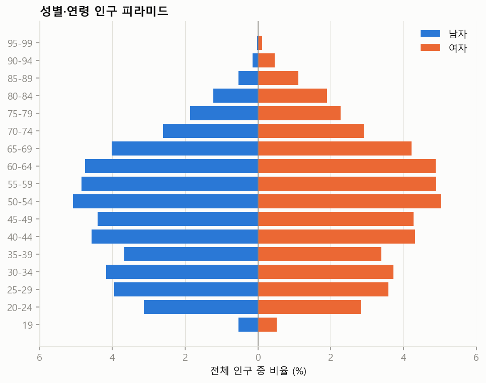
평균 50.66세, 표준편차 17.61세다. 사분위수는 36 / 51 / 64세다. 19세 미만은 없다. 고령으로 갈수록 여자 막대가 더 길다. 저출산·고령화와 여성의 긴 기대수명이 그대로 담겼다.
범주형 변수의 분포
| 혼인 상태 | 행 수 | % |
|---|---|---|
| 배우자있음 | 592,538 | 59.2 |
| 미혼 | 256,962 | 25.7 |
| 사별 | 87,888 | 8.8 |
| 이혼 | 62,612 | 6.3 |
| 학력 | 행 수 | % |
|---|---|---|
| 고등학교 | 331,377 | 33.1 |
| 4년제 대학교 | 271,256 | 27.1 |
| 2~3년제 전문대학 | 150,235 | 15.0 |
| 중학교 | 85,255 | 8.5 |
| 초등학교 | 81,239 | 8.1 |
| 대학원 | 54,323 | 5.4 |
| 무학 | 26,315 | 2.6 |
| 주거 형태 | 행 수 | % |
|---|---|---|
| 아파트 | 620,556 | 62.1 |
| 단독주택 | 169,153 | 16.9 |
| 다세대주택 | 114,369 | 11.4 |
| 주택 이외의 거처 | 60,264 | 6.0 |
| 연립주택 | 25,744 | 2.6 |
| 비주거용 건물 내 주택 | 9,914 | 1.0 |
| 학사 전공 계열 | 행 수 | % |
|---|---|---|
| 해당없음 | 674,421 | 67.4 |
| 공학·제조·건설 | 67,871 | 6.8 |
| 경영·행정·법 | 54,913 | 5.5 |
| 예술·인문 | 49,031 | 4.9 |
| 보건·복지 | 34,547 | 3.5 |
| 교육 | 31,498 | 3.1 |
| 정보통신기술 | 29,169 | 2.9 |
| 서비스 | 18,438 | 1.8 |
| 사회과학·언론 | 17,219 | 1.7 |
| 자연과학·수학 | 16,949 | 1.7 |
| 농림어업·수의학 | 5,944 | 0.6 |
| 가구 유형 | 행 수 | % |
|---|---|---|
| 배우자·자녀와 거주 | 270,355 | 27.0 |
| 배우자와 거주 | 206,341 | 20.6 |
| 혼자 거주 | 140,240 | 14.0 |
| 부모와 동거 | 92,053 | 9.2 |
| 기타2세대 | 39,718 | 4.0 |
| 어머니와 동거 | 37,447 | 3.7 |
| 자녀와 거주 (한부모) | 32,758 | 3.3 |
| 기타3세대 | 28,765 | 2.9 |
| 혼자 거주 (배우자 별거) | 23,648 | 2.4 |
| 자녀와 거주 (배우자 별거) | 15,040 | 1.5 |
| 시도 | 행 수 | % |
|---|---|---|
| 경기 | 262,154 | 26.2 |
| 서울 | 185,228 | 18.5 |
| 부산 | 65,285 | 6.5 |
| 경상남 | 62,416 | 6.2 |
| 인천 | 58,991 | 5.9 |
| 경상북 | 50,298 | 5.0 |
| 대구 | 46,934 | 4.7 |
| 충청남 | 41,456 | 4.2 |
| 전라남 | 34,391 | 3.4 |
| 전북 | 34,188 | 3.4 |
학사 전공은 67%가 '해당없음'이다. 4년제 이상 학력자에게만 값이 있기 때문이다. 가구 유형은 39종으로 세분돼 있다.
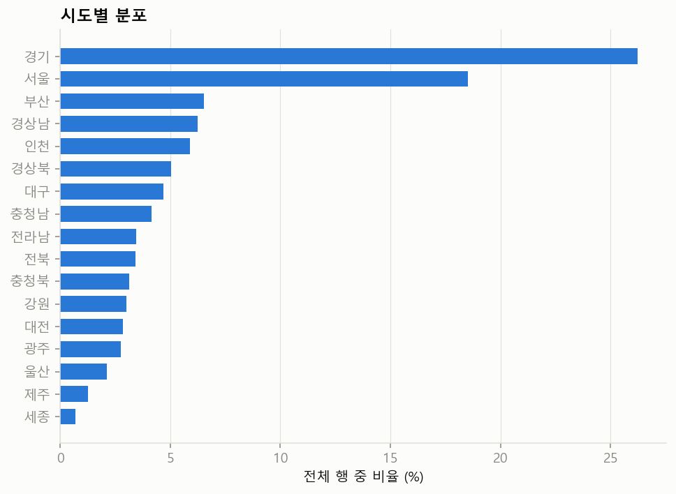
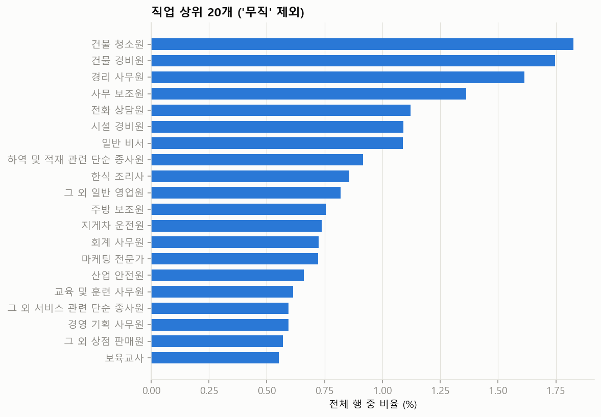
변수 사이의 관계 (교차표)
각 행의 합이 100%다. "이 집단 안에서 어떻게 나뉘는가"를 읽는다. 색이 진할수록 비율이 높다.
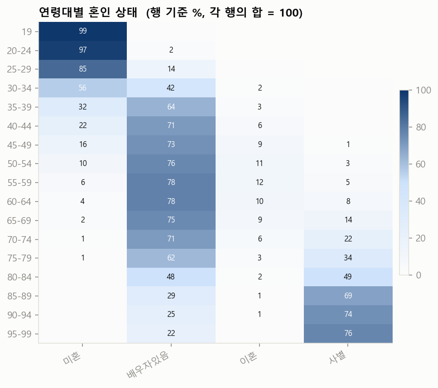
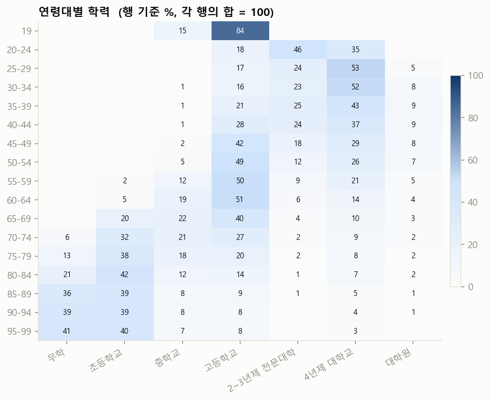
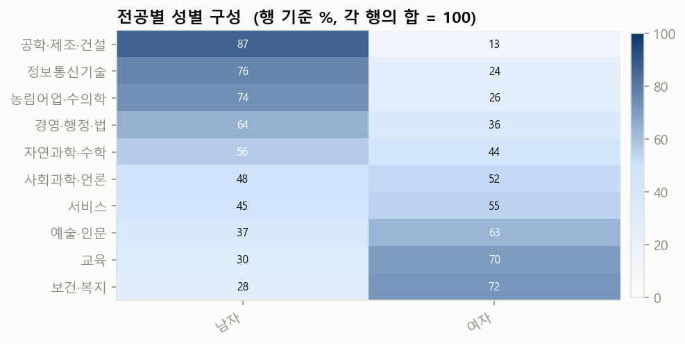
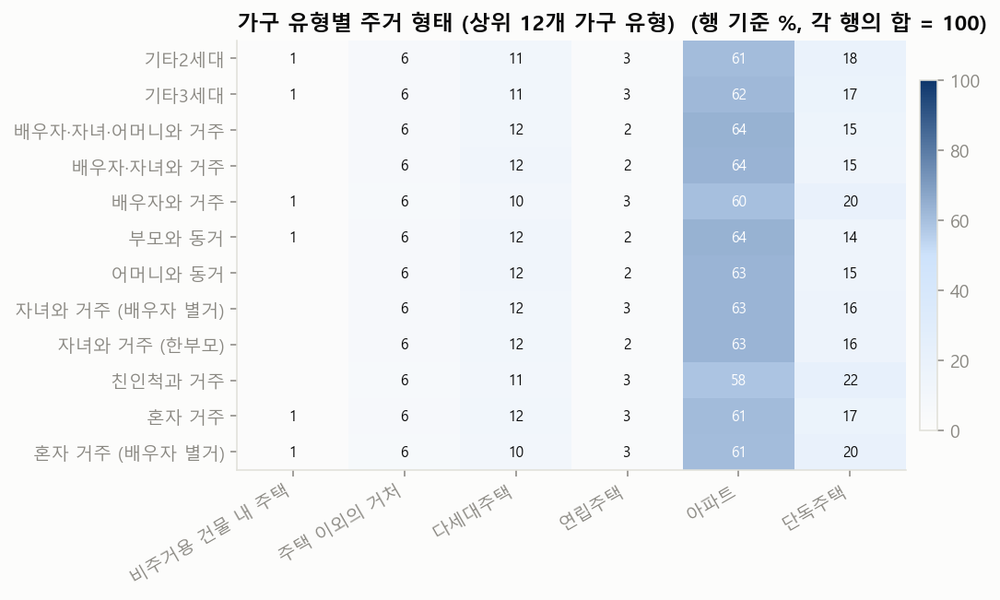
선행 감사가 지적한 약점을 눈으로 확인
'무직'이 한 덩어리
전체의 36.7%가 직업이 '무직'이다. 주부, 학생, 은퇴자, 실업자가 구분되지 않는다. 직업을 쓰는 분석에서는 3분의 1 이상이 빠진다는 뜻이다.
병역은 직업에서 결정된다
'현역'은 5,282행(0.53%)이고 직업은 12종뿐이다. 그 직업을 가졌는데 현역이 아닌 행은 0건이다. 즉 병역 상태는 독립된 정보가 아니라 "직업이 군인인가"와 같은 말이다. 참고로 "전직 육군 부사관, 현재 구직중"처럼 직업 문자열이 다른 전역자 187명은 비현역으로 따로 있다.
| 현역의 직업 | 행 수 |
|---|---|
| 육군 부사관 | 1,915 |
| 육군 장교 | 1,461 |
| 육군 병사 | 523 |
| 공군 부사관 | 334 |
| 공군 장교 | 257 |
| 해군 부사관 | 204 |
| 해병대 부사관 | 183 |
| 해군 장교 | 140 |
이 결과를 만든 코드 보기: scripts/03_eda_structured.py — 빈도표, 피라미드, 교차표, 약점 확인
"""3단계: 12개 인구통계·지리 변수의 기초통계.
만드는 것
- 변수별 빈도표 (data/processed/freq_*.csv)
- 나이 요약, 인구 피라미드
- 교차표 4개와 히트맵
- 선행 감사가 지적한 약점 2개를 빈도표로 확인
- 위 결과를 모은 요약 JSON (보고서가 읽는다)
"""
import json
import polars as pl
import config as C
plt = C.setup_matplotlib()
COLS = [
"sex", "age", "marital_status", "military_status", "family_type", "housing_type",
"education_level", "bachelors_field", "occupation", "district", "province", "country",
]
# 텍스트 컬럼은 빼고 12개 컬럼만 읽는다. 100만 행이어도 수백 MB면 된다.
df = pl.scan_parquet(C.parquet_glob()).select(COLS).collect()
N = df.height
print("행 수:", N)
summary = {"n_rows": N}
def save_csv(frame: pl.DataFrame, name: str) -> None:
"""엑셀에서 한글이 깨지지 않도록 BOM이 붙은 UTF-8로 저장한다."""
path = C.PROCESSED_DIR / name
with open(path, "w", encoding="utf-8-sig", newline="") as f:
f.write(frame.write_csv())
# ---------------------------------------------------------------- 1. 변수별 빈도표
TOP_K = 30 # 범주가 아주 많은 변수는 상위 30개만 보이고 나머지는 합친다
freq_summary = {}
values = {}
MAX_FULL, TOP_VALUES = 60, 40
for col in COLS:
if col == "age":
continue
vc = (
df.group_by(col).len()
.sort("len", descending=True)
.with_columns((pl.col("len") / N * 100).round(2).alias("pct"))
.rename({"len": "count"})
)
n_cat = vc.height
# 스키마 표에 '어떤 값이 들어 있는지' 보여 주기 위한 목록. 범주가 60개 이하면 전부, 많으면 상위 40개만 담는다.
values[col] = vc.head(n_cat if n_cat <= MAX_FULL else TOP_VALUES).to_dicts()
if n_cat > TOP_K:
rest = vc.slice(TOP_K)
vc = pl.concat([
vc.head(TOP_K),
pl.DataFrame({col: [f"(나머지 {rest.height}개)"], "count": [rest["count"].sum()],
"pct": [round(rest["count"].sum() / N * 100, 2)]},
schema=vc.schema),
])
save_csv(vc, f"freq_{col}.csv")
freq_summary[col] = {"n_categories": n_cat, "top": vc.head(12).to_dicts()}
print(f"{col:18s} 범주 {n_cat:5d}개 1위: {vc[col][0]} ({vc['pct'][0]}%)")
summary["freq"] = freq_summary
summary["values"] = values
# ---------------------------------------------------------------- 2. 나이
age = df["age"]
summary["age"] = {
"mean": round(age.mean(), 2), "std": round(age.std(), 2), "min": int(age.min()),
"q25": age.quantile(0.25), "median": age.median(), "q75": age.quantile(0.75), "max": int(age.max()),
}
print("나이:", summary["age"])
# 인구 피라미드: 5세 구간별로 남자는 왼쪽(음수), 여자는 오른쪽(양수)에 그린다
pyr = (
df.with_columns(C.age_band_expr(5))
.group_by("age_band", "sex").len()
.pivot(on="sex", index="age_band", values="len")
.sort("age_band")
.fill_null(0)
)
save_csv(pyr, "age_pyramid.csv")
bands = pyr["age_band"].to_list()
male = [v / N * 100 for v in pyr["남자"].to_list()]
female = [v / N * 100 for v in pyr["여자"].to_list()]
fig, ax = plt.subplots(figsize=(8, 6))
ax.barh(bands, [-m for m in male], color=C.COLOR_1, height=0.8, label="남자")
ax.barh(bands, female, color=C.COLOR_2, height=0.8, label="여자")
ax.axvline(0, color=C.COLOR_MUTED, linewidth=0.8)
ax.set_xlabel("전체 인구 중 비율 (%)")
ax.set_title("성별·연령 인구 피라미드", loc="left", fontweight="bold")
ticks = ax.get_xticks()
ax.set_xticks(ticks)
ax.set_xticklabels([f"{abs(t):.0f}" for t in ticks]) # 왼쪽도 양수로 표시한다
ax.grid(axis="y", visible=False)
ax.legend(frameon=False, loc="upper right")
fig.savefig(C.FIG_DIR / "age_pyramid.png")
plt.close(fig)
# ---------------------------------------------------------------- 3. 교차표
def crosstab(row: str, col: str, frame: pl.DataFrame, top_cols: int = 0) -> pl.DataFrame:
"""행 기준 비율(%) 교차표. 각 행의 합이 100이 된다. '이 나이대에서 혼인 상태가 어떻게 나뉘나'를 읽는 표다."""
ct = frame.group_by(row, col).len()
if top_cols: # 열 범주가 너무 많으면 상위 몇 개만 남기고 나머지는 '기타'로 합친다
keep = frame.group_by(col).len().sort("len", descending=True).head(top_cols)[col].to_list()
ct = ct.with_columns(
pl.when(pl.col(col).is_in(keep)).then(pl.col(col)).otherwise(pl.lit("기타")).alias(col)
).group_by(row, col).agg(pl.col("len").sum())
wide = ct.pivot(on=col, index=row, values="len").fill_null(0).sort(row)
value_cols = [c for c in wide.columns if c != row]
total = wide.select(pl.sum_horizontal(value_cols)).to_series()
return wide.with_columns([(pl.col(c) / total * 100).round(1) for c in value_cols])
def heatmap(table: pl.DataFrame, row: str, title: str, fname: str) -> None:
"""교차표를 색의 진하기로 보여 준다. 한 가지 색의 밝기만 쓴다(값이 클수록 진하다)."""
from matplotlib.colors import LinearSegmentedColormap
cmap = LinearSegmentedColormap.from_list("seq", [C.COLOR_SURFACE, C.COLOR_SEQ_LIGHT, C.COLOR_SEQ_DARK])
cols = [c for c in table.columns if c != row]
data = table.select(cols).to_numpy()
fig, ax = plt.subplots(figsize=(max(7, len(cols) * 1.15), max(3.5, table.height * 0.36)))
im = ax.imshow(data, cmap=cmap, aspect="auto", vmin=0, vmax=100)
ax.set_xticks(range(len(cols)))
ax.set_xticklabels(cols, rotation=30, ha="right")
ax.set_yticks(range(table.height))
ax.set_yticklabels(table[row].to_list())
ax.grid(False)
for i in range(data.shape[0]):
for j in range(data.shape[1]):
v = data[i, j]
if v >= 1: # 1% 미만은 숫자를 생략해 표를 덜 복잡하게 한다
ax.text(j, i, f"{v:.0f}", ha="center", va="center", fontsize=8,
color="white" if v > 55 else C.COLOR_INK)
ax.set_title(title + " (행 기준 %, 각 행의 합 = 100)", loc="left", fontweight="bold")
fig.colorbar(im, ax=ax, fraction=0.025, pad=0.02)
fig.savefig(C.FIG_DIR / fname)
plt.close(fig)
banded = df.with_columns(C.age_band_expr(5))
ct_age_marital = crosstab("age_band", "marital_status", banded)
ct_age_edu = crosstab("age_band", "education_level", banded)
# 전공은 대학 이상만 의미가 있으므로 '해당없음'은 뺀다
ct_field_sex = crosstab("bachelors_field", "sex", df.filter(pl.col("bachelors_field") != "해당없음"))
ct_family_housing = crosstab("family_type", "housing_type", df)
# 가구유형은 39개라 많은 순으로 12개만 그림에 쓴다
top_family = df.group_by("family_type").len().sort("len", descending=True).head(12)["family_type"].to_list()
ct_family_housing_top = ct_family_housing.filter(pl.col("family_type").is_in(top_family))
for table, name in [
(ct_age_marital, "ct_age_marital.csv"), (ct_age_edu, "ct_age_education.csv"),
(ct_field_sex, "ct_field_sex.csv"), (ct_family_housing, "ct_family_housing.csv"),
]:
save_csv(table, name)
EDU_ORDER = ["무학", "초등학교", "중학교", "고등학교", "2~3년제 전문대학", "4년제 대학교", "대학원"]
MARITAL_ORDER = ["미혼", "배우자있음", "이혼", "사별"]
heatmap(ct_age_marital.select(["age_band"] + MARITAL_ORDER), "age_band", "연령대별 혼인 상태", "ct_age_marital.png")
heatmap(ct_age_edu.select(["age_band"] + EDU_ORDER), "age_band", "연령대별 학력", "ct_age_education.png")
heatmap(ct_field_sex.sort("남자", descending=True), "bachelors_field", "전공별 성별 구성", "ct_field_sex.png")
heatmap(ct_family_housing_top, "family_type", "가구 유형별 주거 형태 (상위 12개 가구 유형)", "ct_family_housing.png")
# 주거형태가 가구 유형과 얼마나 무관한지 숫자 하나로: 가구 유형별 아파트 비율의 최솟값과 최댓값
apt = ct_family_housing_top["아파트"]
summary["housing_by_family"] = {"apt_pct_min": apt.min(), "apt_pct_max": apt.max(),
"overall_apt_pct": round(df.filter(pl.col("housing_type") == "아파트").height / N * 100, 1)}
# ---------------------------------------------------------------- 4. 선행 감사가 지적한 약점 확인
unemployed = df.filter(pl.col("occupation") == "무직").height / N * 100
# 병역: '현역'인 사람들의 직업이 무엇인지, 그리고 그 직업을 가진 사람 중 현역이 아닌 사람이 있는지 본다
active = df.filter(pl.col("military_status") == "현역")
active_occ = active.group_by("occupation").len().sort("len", descending=True)
occ_of_active = active_occ["occupation"].to_list()
same_occ_not_active = df.filter(pl.col("occupation").is_in(occ_of_active) & (pl.col("military_status") != "현역")).height
summary["audit_check"] = {
"unemployed_pct": round(unemployed, 1),
"active_duty_n": active.height,
"active_duty_pct": round(active.height / N * 100, 2),
"active_duty_occupations": active_occ.head(10).to_dicts(),
"n_occupations_of_active": len(occ_of_active),
"same_occupation_but_not_active": same_occ_not_active,
"active_sex": active.group_by("sex").len().to_dicts(),
}
save_csv(active_occ, "active_duty_occupations.csv")
print("무직 비율:", summary["audit_check"]["unemployed_pct"], "%")
print("현역의 직업 종류:", len(occ_of_active), "/ 같은 직업인데 현역이 아닌 행:", same_occ_not_active)
# ---------------------------------------------------------------- 5. 직업 상위 막대 그림 (무직 제외)
occ = (df.filter(pl.col("occupation") != "무직").group_by("occupation").len()
.sort("len", descending=True).head(20).sort("len"))
fig, ax = plt.subplots(figsize=(8, 6.5))
ax.barh(occ["occupation"].to_list(), [v / N * 100 for v in occ["len"].to_list()], color=C.COLOR_1, height=0.7)
ax.set_xlabel("전체 행 중 비율 (%)")
ax.set_title("직업 상위 20개 ('무직' 제외)", loc="left", fontweight="bold")
ax.grid(axis="y", visible=False)
fig.savefig(C.FIG_DIR / "occupation_top20.png")
plt.close(fig)
# 시도별 분포
prov = df.group_by("province").len().sort("len")
fig, ax = plt.subplots(figsize=(8, 5.5))
ax.barh(prov["province"].to_list(), [v / N * 100 for v in prov["len"].to_list()], color=C.COLOR_1, height=0.7)
ax.set_xlabel("전체 행 중 비율 (%)")
ax.set_title("시도별 분포", loc="left", fontweight="bold")
ax.grid(axis="y", visible=False)
fig.savefig(C.FIG_DIR / "province.png")
plt.close(fig)
out = C.PROCESSED_DIR / "summary_structured.json"
out.write_text(json.dumps(summary, ensure_ascii=False, indent=2, default=str), encoding="utf-8")
print("저장:", out)
6텍스트 필드의 구조와 기초통계
13개 텍스트 필드는 LLM이 썼다. 한 사람당 약 1,438자 분량이다. 정답지가 없는 부분이라, 먼저 "어떻게 생겼는지"를 본다.
한 행은 이렇게 생겼다
위쪽이 인구통계 변수, 아래가 그 값을 받아 LLM이 쓴 서술문이다. 표시는 인구통계 변수의 값(지역, 나이대, 직업명)이 서술문에 그대로 나온 곳이다. 이름은 독립 필드가 없고 모든 페르소나 문장 맨 앞에 "OOO 씨는"으로 들어 있다.
예시 1. 유현정 씨 · 26세 여자 · 학습지 방문강사 · 충청남-아산시
persona한 문장 요약- 유현정 씨는 공학적 꼼꼼함으로 일상을 설계하며 정적인 안정감과 소박한 행복을 추구하는 아산의 20대 방문 강사입니다.
professional_persona직업 페르소나- 유현정 씨는 공학 전공자의 논리를 살려 방문 경로를 분 단위로 쪼개 최단 거리로 설계하며, 학생들의 성취도를 엑셀 표에 세밀하게 기록해 관리하는 철저한 학습지 강사입니다. 다만 마음 한편으로는 집 근처 제조 기업의 사무직으로 옮겨 정시 퇴근과 고정 급여가 보장되는 삶을 누리는 상상을 하며 하루를 보냅니다.
family_persona가족 페르소나- 유현정 씨는 아산의 한적한 주택가에서 남편과 소박한 일상을 공유하며, 이웃들에게는 깍듯하지만 적당한 거리를 두는 편이며 오직 남편과 소수의 믿음직한 인연에게만 자신의 속마음을 내보입니다.
sports_persona스포츠 페르소나- 유현정 씨는 헬스장 구석 자리에서 남들의 시선을 피한 채 정해진 세트 수와 무게를 묵묵히 채우는 과정에서 성취감을 느끼며, 주말에는 남편과 함께 곡교천 은행나무길을 천천히 걷는 것으로 체력을 관리합니다.
arts_persona예술 페르소나- 유현정 씨는 소란스러운 곳보다는 집에서 조용히 음악을 감상하며 복잡한 생각을 정리하는 시간을 소중히 여기며, 인위적인 예술품보다는 자연이 주는 정적인 풍경에서 정서적인 위안을 얻습니다.
travel_persona여행 페르소나- 유현정 씨는 화려한 관광 도시보다는 탁 트인 자연경관이 펼쳐진 한적한 곳으로 남편이나 친구와 함께 여행을 떠나, 풍경을 가만히 바라보며 일상의 소모된 마음을 회복합니다.
culinary_persona음식 페르소나- 유현정 씨는 일주일에 한 번 짜장면이나 짬뽕 같은 중식을 외식으로 즐기거나 고기가 들어가지 않은 정갈한 나물 중심의 한식당을 찾으며, 주 1회 배달 음식을 시켜 먹는 것으로 소소한 즐거움을 찾습니다.
cultural_background문화적 배경- 아산의 한적한 주택가에서 남편과 소박한 일상을 공유하며, 주변의 기대나 시선에 휩쓸리기보다 나만의 명확한 생활 규칙과 루틴이 지켜질 때 깊은 안도감을 느낍니다. 낯가림이 있어 동네 이웃들과는 적당한 거리를 두는 편이지만, 내 사람이라고 판단한 소수의 인연에게는 한없이 성실하고 책임감 있게 행동합니다.
skills_and_expertise기술·전문성 (서술)- 공학 전공자 특유의 논리적 사고를 방문 교육에 접목해, 학생별 학습 진도와 성취도를 엑셀 표로 세밀하게 기록하고 체계적으로 관리합니다. 복잡한 방문 경로를 최단 거리로 설계하여 이동 시간을 줄이고, 정해진 시간표를 단 1분도 어기지 않고 준수하는 철저함을 보입니다.
skills_and_expertise_list기술·전문성 (목록)- ['학습 진도 최적화 스케줄링', '1:1 맞춤형 학습 성취도 분석', '효율적인 방문 경로 설계', '기초 공학 원리를 이용한 쉬운 설명']
hobbies_and_interests취미·관심사 (서술)- 스트레스가 쌓인 날에는 동네 사우나 온탕에 몸을 담근 채 멍하니 생각을 정리하거나, 남편과 함께 곡교천 은행나무길을 천천히 걸으며 마음을 가라앉힙니다. 헬스장에서는 남들이 보지 않는 구석 자리에서 정해진 세트 수와 무게를 묵묵히 채우는 과정 자체에서 성취감을 얻습니다.
hobbies_and_interests_list취미·관심사 (목록)- ['곡교천 은행나무길 산책', '동네 목욕탕 온탕 입욕', '헬스장 루틴 웨이트 트레이닝', '아이유의 잔잔한 노래 감상', '한적한 숲길 드라이브']
career_goals_and_ambitions경력 목표·포부- 갑작스러운 변화나 모험보다는 현재의 직무에서 숙련도를 쌓아 지역 내에서 인정받는 베테랑 강사가 되어 수입의 안정성을 확보하는 것을 최우선으로 합니다. 마음 한편으로는 전공을 살려 집 근처의 안정적인 제조 기업 사무직으로 옮겨 정시 퇴근이 보장되는 삶을 꾸리는 계획을 조용히 세우고 있습니다.
예시 2. 김동원 씨 · 33세 남자 · 기계 제도사 · 경상북-경산시
persona한 문장 요약- 김동원 씨는 경산에서 자동차 부품 도면을 그리는 33세 기계 제도사로, 효율적인 업무 처리와 온전한 휴식 사이의 균형을 추구하며 소박한 일상의 안정을 중요하게 여기는 인물입니다.
professional_persona직업 페르소나- 김동원 씨는 카티아와 오토캐드를 활용해 자동차 부품의 전체적인 구조를 빠르게 잡아내는 능력이 탁월하며, 현장 작업자들이 한눈에 이해할 수 있도록 도면을 직관적으로 다듬는 데 능숙합니다. 다만 세밀한 수치 수정 작업이 길어지면 금방 집중력이 떨어져 책상 앞에서 멍하게 시간을 보내거나 잦은 한숨을 내쉬는 버릇이 있습니다.
family_persona가족 페르소나- 김동원 씨는 경산의 조용한 주택가에서 부모님과 함께 지내며 무뚝뚝한 말투 속에서도 서로를 챙기는 경상도 가족 특유의 끈끈한 유대감 속에서 안정감을 느낍니다. 부모님과의 관계가 원만해 정서적으로 편안하지만, 때로는 성인이 되어서도 부모님 그늘 아래 있다는 생각에 묘한 답답함을 느끼기도 합니다.
sports_persona스포츠 페르소나- 김동원 씨는 땀 흘리는 격렬한 운동 대신 주말이면 친구들과 함께 경주 보문호수 산책길을 천천히 걷는 시간을 통해 신체적, 정신적 피로를 해소합니다. 걷는 도중 마음에 드는 풍경이 나타나면 가던 길을 멈추고 한참 동안 가만히 바라보는 정적인 활동에서 가장 큰 만족감을 느낍니다.
arts_persona예술 페르소나- 김동원 씨는 유튜브에서 최신 전기차의 내부 설계 구조나 외관 디자인 리뷰 영상을 찾아보며 공학적인 조형미를 감상하는 것을 즐깁니다. 난해한 현대 미술보다는 자연스럽게 어우러진 풍경이나 정밀하게 설계된 기계 장치의 매끄러운 선에서 시각적인 즐거움을 찾습니다.
travel_persona여행 페르소나- 김동원 씨는 연인이나 친구와 함께 탁 트인 바다나 깊은 산속의 조용한 펜션을 찾아가 아무런 계획 없이 시간을 보내는 여행을 즐깁니다. 유명 관광지를 바쁘게 돌아다니는 일정 대신, 숙소 창밖으로 보이는 자연 풍경을 감상하며 느리게 흐르는 시간을 만끽하는 방식을 고수합니다.
culinary_persona음식 페르소나- 김동원 씨는 집 근처 백반집에서 각종 나물 반찬이 듬뿍 나오는 한정식을 든든하게 챙겨 먹으며 하루의 허기를 채웁니다. 2주에 한 번 정도는 집에서 편하게 배달 음식을 시켜 먹지만, 주말 외식으로는 정갈하게 차려진 양식당의 크림 파스타를 선택해 미각적인 즐거움을 얻습니다.
cultural_background문화적 배경- 경산의 조용한 주택가에서 부모님과 함께 지내며 지역 사회의 끈끈한 유대감 속에서 안정감을 느낍니다. 대학 시절부터 몸에 밴 공학도 특유의 실용적인 사고방식과 경상도 특유의 무뚝뚝하지만 속 깊은 정서가 함께 공존합니다.
skills_and_expertise기술·전문성 (서술)- 오토캐드와 카티아를 활용해 복잡한 자동차 부품 도면을 빠르게 설계하며, 현장 작업자들이 오해 없이 이해할 수 있도록 도면을 직관적으로 다듬는 능력이 탁월합니다. 세밀한 수정 작업이 길어지면 금방 피로를 느끼지만, 전체적인 구조를 빠르게 잡고 핵심을 구현하는 효율적인 작업 방식에 능숙합니다.
skills_and_expertise_list기술·전문성 (목록)- ['오토캐드 정밀 도면 설계', '카티아 3D 모델링', '자동차 부품 공정 최적화', '제조 현장 협업 및 도면 커뮤니케이션']
hobbies_and_interests취미·관심사 (서술)- 퇴근 후 거실 소파에 누워 유튜브로 최신 자동차 리뷰 영상을 보며 시간을 보내거나, 주말이면 친구들과 함께 경주 보문호수 산책길을 천천히 걷는 시간을 소중히 여깁니다. 가끔은 분위기 좋은 양식당에서 파스타를 먹으며 기분 전환을 하고, 평소에는 집 근처 백반집에서 나물 반찬이 많이 나오는 한정식을 즐깁니다.
hobbies_and_interests_list취미·관심사 (목록)- ['유튜브 자동차 리뷰 시청', '경주 보문호수 산책', '남해 바다 풍경 감상 여행', '동네 백반집 나물 정식 맛집 찾기']
career_goals_and_ambitions경력 목표·포부- 무리하게 직급을 올리거나 경쟁하기보다 현재의 전문성을 유지하며 일과 삶의 균형을 안정적으로 가져가는 것을 목표로 합니다. 업무 효율을 극대화하는 자신만의 도면 관리 체계를 구축해, 퇴근 후의 온전한 휴식 시간을 더 많이 확보하고 싶어 합니다.
예시 3. 이연선 씨 · 53세 여자 · 보육교사 · 서울-서대문구
persona한 문장 요약- 이연선 씨는 ICT 전공 지식을 보육 현장에 접목한 유능한 교사이자, 대가족의 화목을 이끄는 서대문구의 사교적이고 따뜻한 중년 여성입니다.
professional_persona직업 페르소나- 이연선 씨는 서대문구의 한 어린이집에서 보육교사로 근무하며, 대학 시절 전공한 정보통신기술을 활용해 아이들이 흥미를 느낄 수 있는 간단한 디지털 학습 교구를 직접 제작해 수업에 활용합니다. 학부모들의 다양한 요구 사항과 갈등 사이에서 특유의 유연한 화법으로 분위기를 부드럽게 만드는 중재자 역할을 하며, 동료 교사들이 업무적 어려움에 부딪힐 때 가장 먼저 조언을 구하는 든든한 버팀목이 되어줍니다.
family_persona가족 페르소나- 이연선 씨는 서대문구 아파트에서 남편과 자녀들, 그리고 연로하신 어머니를 모시며 매일 아침 북적이는 대가족의 식탁을 준비합니다. 어머니의 잔소리와 아이들의 투정 사이에서 중심을 잡는 유연한 중재자 역할을 수행하지만, 가끔은 모든 가족 역할에서 벗어나 방 안에서 즐기는 짧은 낮잠으로 에너지를 충전합니다.
sports_persona스포츠 페르소나- 이연선 씨는 주말이면 동네 배드민턴 클럽 회원들과 셔틀콕을 주고받으며 땀을 흘리고, 경기 후에는 가볍게 줄넘기를 하며 내기를 즐기는 활기찬 생활을 합니다. 평일 저녁에는 홍제천 물줄기를 따라 천천히 걸으며 계절마다 바뀌는 꽃과 나무의 색깔을 관찰하고, 복잡했던 마음을 차분하게 정리하는 시간을 갖습니다.
arts_persona예술 페르소나- 이연선 씨는 퇴근 후 거실 소파에 기대어 최신 드라마를 시청하거나 스마트폰 게임의 간단한 퀘스트를 깨며 소소한 성취감을 얻는 휴식을 즐깁니다. 90년대 대학 시절 PC통신과 초기 인터넷이 주던 낯설고 설레는 감정을 기억하며, 가끔은 그 시절의 노래 모음집을 틀어놓고 옛 추억에 잠기곤 합니다.
travel_persona여행 페르소나- 이연선 씨는 휴일이면 친한 친구들과 함께 강원도 평창의 숲길이나 제주도의 한적한 오름을 찾아 탁 트인 자연 풍경을 감상하며 마음의 여유를 되찾습니다. 화려한 관광 코스보다는 나무 냄새가 물씬 풍기는 숲속 산책로를 걷거나 바다가 보이는 조용한 벤치에 앉아 도란도란 이야기를 나누는 정적인 여정을 선호합니다.
culinary_persona음식 페르소나- 이연선 씨는 일주일에 한 번, 연희동 골목의 작은 파스타 집에서 꾸덕한 크림 파스타와 마늘 바게트를 먹으며 친구들과 밀린 수다를 떠는 시간을 가장 아낍니다. 배달 음식을 시킬 때는 자극적인 메뉴 대신 정갈한 나물 비빔밥이나 된장찌개 같은 한식을 선택해 가족들과 함께 식탁에 둘러앉아 식사합니다.
cultural_background문화적 배경- 90년대 대학 시절 PC통신과 초기 인터넷의 설렘을 기억하며, 서대문구 연희동의 조용한 골목 정취와 함께 어머니를 모시는 대가족의 북적거림 속에서 삶의 조화를 찾아갑니다.
skills_and_expertise기술·전문성 (서술)- 정보통신기술 전공 지식을 보육 현장에 접목해 아이들을 위한 디지털 학습 보조 도구를 직접 제작하며, 다양한 성향의 학부모들 사이에서 갈등을 부드럽게 중재하는 능력이 탁월합니다.
skills_and_expertise_list기술·전문성 (목록)- ['태블릿 PC를 활용한 맞춤형 보육 콘텐츠 설계', '학부모 상담 및 정서적 갈등 중재', '디지털 알림장 및 행정 시스템 효율적 운영', '아이들 눈높이에 맞춘 스토리텔링 기반 교육']
hobbies_and_interests취미·관심사 (서술)- 주말이면 홍제천 산책로를 따라 걸으며 계절의 변화를 살피고, 동네 배드민턴 클럽에서 땀 흘린 뒤 친구들과 연희동 파스타 가게에서 밀린 이야기를 나누며 시간을 보냅니다.
hobbies_and_interests_list취미·관심사 (목록)- ['홍제천 물길 따라 걷는 아침 산책', '동네 배드민턴 동호회 정기 경기', '연희동 이탈리아 식당 맛집 탐방', '거실에서 가족들과 함께 보는 주말 예능 프로그램']
career_goals_and_ambitions경력 목표·포부- 직급 상승이나 명예보다는 아이들이 건강하게 성장하는 모습에서 성취감을 느끼며, 동료 교사들이 믿고 의지할 수 있는 현장의 든든한 조력자로 남고자 합니다.
예시 4. 허석진 씨 · 66세 남자 · 대리 주차원 · 부산-사상구
persona한 문장 요약- 허석진 씨는 부산 사상구에서 성실하게 대리 주차원으로 일하며, 이웃 간의 정과 가족의 안정을 최우선으로 여기는 푸근한 인상의 60대 가장입니다.
professional_persona직업 페르소나- 허석진 씨는 부산 사상구의 복잡한 주차 공간에서도 한 번에 매끄럽게 차량을 밀어 넣는 숙련된 대리 주차원입니다. 손님의 미세한 표정 변화를 읽어 빠르게 응대하는 유연함을 갖췄지만, 업무 후 작성해야 하는 일일 보고서나 차량 관리 대장을 작성할 때면 항목을 빼먹거나 글씨가 겹쳐 동료들의 도움을 받곤 합니다.
family_persona가족 페르소나- 허석진 씨는 사상구의 다세대주택에서 아내와 자녀들과 함께 북적거리며 살아가며, 가족들에게 짐이 되지 않는 든든한 가장으로 남기를 바랍니다. 평소에는 다정하고 유연한 성격이지만, 세세한 집안일이나 일정 관리를 놓쳐 아내에게 잔소리를 들을 때면 멋쩍은 듯 뒷머리를 긁적이며 허허 웃어넘깁니다.
sports_persona스포츠 페르소나- 허석진 씨는 삼락생태공원의 나무 데크 길을 천천히 걸으며 계절마다 바뀌는 꽃과 나무의 색깔을 구경하는 시간을 소중히 여깁니다. 땀을 흠뻑 뺀 뒤 집 근처 단골 사우나의 뜨거운 탕에서 몸을 풀고, 거실 소파에 누워 낮잠을 청하며 하루의 피로를 씻어냅니다.
arts_persona예술 페르소나- 허석진 씨는 화려한 전시관보다는 삼락생태공원의 탁 트인 풍경과 계절의 변화가 주는 자연스러운 색채에서 정서적인 만족감을 얻습니다. 동네 목욕탕에서 이웃들과 나누는 소소한 농담과 웃음소리를 삶의 가장 생생한 즐거움으로 여기며 분위기를 띄우는 역할을 자처합니다.
travel_persona여행 페르소나- 허석진 씨는 친구들과 함께 공기 좋은 숲길이나 탁 트인 바닷가 풍경을 찾아다니며 느긋하게 걷는 여행을 즐깁니다. 화려한 관광지 코스를 짜기보다는 발길 닿는 대로 걷다가 전망 좋은 정자에 앉아 멍하니 산등성이를 바라보며 시간을 보내는 방식을 선호합니다.
culinary_persona음식 페르소나- 허석진 씨는 일주일에 네 번 이상 아내와 함께 동네 생선구이집을 찾아 짭조름한 갈치구이에 갓 지은 밥을 곁들여 먹습니다. 가끔 기분을 내고 싶을 때는 집 앞 치킨집에서 바삭한 후라이드 치킨을 포장해와 시원한 맥주 한 캔을 따며 하루의 고단함을 달랩니다.
cultural_background문화적 배경- 사상구의 오래된 골목 정서 속에서 자라나 이웃 간의 정을 중요하게 여기며, 동네 목욕탕에서 먼저 인사를 건네며 분위기를 띄우는 역할을 자처합니다. 최근에는 공복혈당 수치 때문에 식단 관리를 해야 한다는 압박감을 느끼면서도, 오랜 친구들과 함께하는 술자리에서의 유대감을 포기하지 못해 내심 갈등하곤 합니다.
skills_and_expertise기술·전문성 (서술)- 수십 년간 다양한 차량을 다루며 좁은 공간에서도 한 번에 매끄럽게 차를 밀어 넣는 감각을 갖췄고, 손님의 표정만 보고도 요구사항을 빠르게 읽어내는 유연한 응대 능력이 탁월합니다. 다만, 업무 외적인 서류 정리나 세세한 일정 관리에서는 종종 실수를 하여 배우자에게 잔소리를 듣기도 합니다.
skills_and_expertise_list기술·전문성 (목록)- ['협소한 공간에서의 정밀한 차량 주차 및 회전', '다양한 연령대 고객의 성향을 빠르게 파악하는 눈치', '사상구 일대의 지름길과 도로 특성 숙지', '갈등 상황에서 분위기를 부드럽게 만드는 중재 능력']
hobbies_and_interests취미·관심사 (서술)- 삼락생태공원의 나무 데크 길을 천천히 걸으며 계절의 변화를 살피거나, 단골 사우나에서 뜨거운 탕에 몸을 담그고 땀을 뺀 뒤 마시는 시원한 바나나우유 한 잔에서 삶의 낙을 찾습니다. 외식으로는 아내와 함께 동네 생선구이집에서 짭조름한 갈치구이를 먹거나, 가끔 기분 전환을 위해 바삭한 후라이드 치킨에 맥주 한 잔을 곁들입니다.
hobbies_and_interests_list취미·관심사 (목록)- ['삼락생태공원 느리게 산책하기', '동네 단골 사우나에서 반신욕과 낮잠 즐기기', '친구들과 함께 전국의 이름난 산과 바다 풍경 찾아다니기', '집 근처 한식당에서 된장찌개와 나물 반찬으로 식사하기']
career_goals_and_ambitions경력 목표·포부- 큰 성공보다는 지금처럼 성실하게 일하며 가족들에게 짐이 되지 않는 안정적인 생활을 유지하는 것에 만족하며, 사고 없이 건강하게 현직을 지키는 것을 최우선으로 삼습니다. 가끔은 몸이 예전 같지 않다는 생각에 문득 불안해지지만, 동료들 사이에서 믿음직한 어른으로 남고 싶어 합니다.
예시 5. 주명순 씨 · 76세 여자 · 음식 서비스 종사원 · 강원-철원군
persona한 문장 요약- 주명순 씨는 철원군 관공서 식당의 살림꾼으로, 사람들과 어울리는 것을 좋아하는 외향적인 성격과 대용량 조리 능력을 갖춘 76세의 활기찬 어르신입니다.
professional_persona직업 페르소나- 주명순 씨는 철원군 관공서 식당에서 수백 명의 식사를 책임지며, 특히 대형 솥에 끓여내는 소고기뭇국 맛으로 젊은 직원들 사이에서 정평이 나 있습니다. 주명순 씨는 재료 손질 속도가 워낙 빨라 동료들의 일손을 덜어주지만, 가끔은 마음이 앞서 조리 도구를 여기저기 두고 잊어버리는 덜렁거리는 면모를 보입니다.
family_persona가족 페르소나- 주명순 씨는 함께 살아온 배우자와 함께 자가 아파트에서 서로의 일상을 공유하며, 가끔은 사소한 일로 티격태격하면서도 서로의 빈자리를 채워주는 끈끈한 정을 나눕니다. 주명순 씨는 집안일을 효율적으로 처리하는 손놀림이 빨라 배우자가 손댈 틈이 없게 만들며, 가끔은 너무 앞서나가는 성격 탓에 배우자에게 잔소리를 듣기도 합니다.
sports_persona스포츠 페르소나- 주명순 씨는 날씨가 풀리면 동네 친목회 회원들과 어울려 한탄강 물줄기를 따라 천천히 걸으며 수다를 떠는 것으로 하루의 스트레스를 풉니다. 주명순 씨는 정해진 운동 계획을 지키기보다는 그날의 기분에 따라 걷는 거리와 경로를 즉흥적으로 결정하며 발길 닿는 대로 움직입니다.
arts_persona예술 페르소나- 주명순 씨는 거실에 켜진 텔레비전에서 '미스트롯' 같은 프로그램이 나오면 가수를 따라 열창하며 집안 전체를 노래방으로 만듭니다. 주명순 씨는 정교한 예술 작품 감상보다는 가슴을 울리는 구수한 트로트 가락에 더 깊이 몰입하며 삶의 애환을 달랩니다.
travel_persona여행 페르소나- 주명순 씨는 친목 모임 회원들과 함께 고석정의 기암괴석을 구경하며 자연이 주는 웅장함에 감탄하는 여행을 즐깁니다. 주명순 씨는 빡빡한 여행 일정표를 짜는 것을 질색하며, 마음에 드는 풍경이 보이면 계획에 없더라도 한참을 멍하니 서서 바라보는 시간을 갖습니다.
culinary_persona음식 페르소나- 주명순 씨는 대량 조리에 능숙해 제육볶음 수백 인분을 순식간에 볶아내며, 2주에 한 번쯤은 친구들과 함께 동네 고깃집에서 지글지글 익어가는 삼겹살을 먹습니다. 주명순 씨는 가끔 분위기 전환을 위해 화려한 안주가 나오는 주점에 들러 시끌벅적한 분위기를 즐기지만, 결국 입맛에는 집에서 끓인 된장찌개가 가장 잘 맞는다고 생각합니다.
cultural_background문화적 배경- 철원의 매서운 겨울바람을 견디며 살아온 세월이 몸에 배어 있으며, 학교 공부보다는 일찍이 집안일을 돕고 사람들과 어울리며 삶의 지혜를 익혔습니다. 군부대와 관공서가 밀집한 지역 특성상 다양한 외지인들과 스스럼없이 소통하며 적응하는 법을 자연스럽게 터득했습니다.
skills_and_expertise기술·전문성 (서술)- 수백 명분의 식사를 빠르게 준비하는 대용량 조리 능력이 탁월하며, 식재료 손질 시간을 획기적으로 줄이는 자신만의 요령이 있습니다. 같이 일하는 동료들의 기분을 빠르게 파악해 갈등을 중재하거나 분위기를 띄우는 데 능숙합니다.
skills_and_expertise_list기술·전문성 (목록)- ['대용량 식재료 효율적 손질', '단체 배식 시스템 관리', '동료 간 갈등 중재 및 분위기 조성', '강원도 지역 제철 식재료 활용법']
hobbies_and_interests취미·관심사 (서술)- 날씨가 좋을 때면 친목회 회원들과 함께 고석정 주변의 기암괴석과 한탄강 물줄기를 따라 천천히 걸으며 소소한 이야기를 나눕니다. 집에서는 좋아하는 트로트 프로그램을 시청하며 가사를 따라 부르고, 오후에는 낮잠 한숨으로 기운을 차리는 시간을 즐깁니다.
hobbies_and_interests_list취미·관심사 (목록)- ['한탄강 주변 산책로 걷기', '트로트 가요제 시청 및 따라 부르기', '지역 경로당 친목 모임', '제철 나물 무치기']
career_goals_and_ambitions경력 목표·포부- 무리하게 직급을 올리기보다 매일 아침 건강하게 출근해 동료들과 웃으며 인사 나누는 일상을 오래도록 유지하고 싶어 합니다. 내가 만든 밥을 먹고 힘내는 젊은 직원들에게 오늘 국이 정말 맛있다라는 말 한마디 듣는 것에 큰 보람을 느낍니다.
필드별 길이와 중복
| 필드 | 뜻 | 평균 글자 | 5% | 95% | 평균 어절 | 완전 중복 % |
|---|---|---|---|---|---|---|
persona | 한 문장 요약 | 82 | 65 | 100 | 19 | 0.0 |
professional_persona | 직업 페르소나 | 160 | 105 | 206 | 38 | 0.0 |
sports_persona | 스포츠 페르소나 | 134 | 87 | 173 | 33 | 0.0 |
arts_persona | 예술 페르소나 | 138 | 91 | 177 | 34 | 0.0 |
travel_persona | 여행 페르소나 | 135 | 87 | 174 | 33 | 0.0 |
culinary_persona | 음식 페르소나 | 142 | 93 | 183 | 36 | 0.0 |
family_persona | 가족 페르소나 | 144 | 93 | 183 | 34 | 0.0 |
cultural_background | 문화적 배경 | 135 | 87 | 179 | 32 | 0.0 |
skills_and_expertise | 기술·전문성 (서술) | 121 | 81 | 160 | 29 | 0.0 |
hobbies_and_interests | 취미·관심사 (서술) | 129 | 81 | 172 | 31 | 0.0 |
career_goals_and_ambitions | 경력 목표·포부 | 118 | 80 | 158 | 29 | 0.0 |
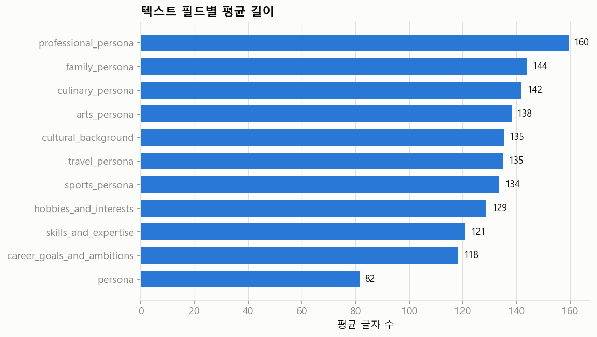
길이의 5%~95% 범위가 좁다. 프롬프트에서 분량을 지정했다는 뜻으로 보인다. 완전히 같은 문장은 사실상 없다.
문장의 반복 틀
이름을 뗀 뒤의 첫 어절과 문장의 마지막 어절 중 흔한 것이다. 내용은 다양해도 끝맺음은 몇 가지로 몰린다. LLM이 쓴 글의 전형적인 흔적이다.
| 필드 | 흔한 첫 어절 | 흔한 마지막 어절 |
|---|---|---|
persona | 부산 3.51%, 대구 3.08%, 인천 2.78%, 광주 1.55%, 공학적 1.53%, 대전 1.48% | 여성입니다. 25.45%, 가장입니다. 15.78%, 남성입니다. 10.54%, 청년입니다. 7.81%, 인물입니다. 5.37%, 어르신입니다. 4.5% |
professional_persona | 수십 3.39%, 현재 2.03%, 대구 1.54%, 부산 1.19%, 정식 1.19%, 인천 1.13% | 있습니다. 26.6%, 합니다. 15.15%, 보입니다. 4.13%, 꿈꿉니다. 3.16%, 통합니다. 3.04%, 느낍니다. 3.03% |
career_goals_and_ambitions | 현재의 9.58%, 거창한 9.07%, 이제는 6.76%, 현재 4.65%, 지금 2.71%, 갑작스러운 2.41% | 합니다. 35.11%, 있습니다. 18.38%, 둡니다. 6.38%, 꿈꿉니다. 5.63%, 지향합니다. 4.09%, 느낍니다. 3.58% |
cultural_background | 대구 3.68%, 인천 3.41%, 부산 3.11%, 광주 2.29%, 대전 1.9%, 수원 1.87% | 있습니다. 28.97%, 합니다. 5.08%, 살아왔습니다. 4.75%, 살아갑니다. 3.67%, 여깁니다. 3.37%, 되었습니다. 2.54% |
목록 필드: 기술과 취미
기술은 행당 평균 4.09개, 취미는 4.41개다. 기술 항목은 전체 4,089,133개 중 고유한 것이 1,453,623개다. 대부분이 한 번만 나오는 자유 서술이라는 뜻이다. 표준 기술 분류로 쓰려면 묶는 작업이 필요하다.
기술 상위 25개
| 항목 | 나온 행 수 | 행 중 % |
|---|---|---|
| 제철 나물 무침 | 16,413 | 1.64 |
| 효율적인 가계 지출 관리 | 9,038 | 0.9 |
| 베란다 텃밭 작물 재배 | 5,737 | 0.57 |
| 텃밭 작물 재배 및 관리 | 5,315 | 0.53 |
| 베란다 텃밭 가꾸기 | 4,920 | 0.49 |
| 대인 관계 갈등 중재 | 4,232 | 0.42 |
| 입주민 민원 응대 및 갈등 중재 | 3,713 | 0.37 |
| 효율적인 주거 공간 정리 정돈 | 3,562 | 0.36 |
| 텃밭 작물 재배 | 3,501 | 0.35 |
| 효율적인 집안 정리 정돈 | 3,435 | 0.34 |
| 제철 식재료를 활용한 한식 상차림 | 3,374 | 0.34 |
| 지역 사회 인적 네트워크 관리 | 3,121 | 0.31 |
| 지역 커뮤니티 갈등 중재 | 2,872 | 0.29 |
| 마을 공동체 갈등 중재 | 2,815 | 0.28 |
| 제철 나물 요리 | 2,716 | 0.27 |
| 민원인 응대 및 갈등 중재 | 2,655 | 0.27 |
| 제철 나물 무침과 밑반찬 만들기 | 2,458 | 0.25 |
| 제철 식재료를 활용한 한식 조리 | 2,433 | 0.24 |
| 가계부 정밀 기록 | 2,407 | 0.24 |
| 전통 방식의 장 담그기 | 2,330 | 0.23 |
| 갈등 중재 및 협상 | 2,185 | 0.22 |
| 오토캐드 도면 설계 | 2,178 | 0.22 |
| 대형 건물 효율적 청소 동선 설계 | 2,103 | 0.21 |
| 전통 장 담그기 | 2,047 | 0.2 |
| 제철 나물 무침과 장아찌 담그기 | 1,980 | 0.2 |
취미 상위 25개
| 항목 | 나온 행 수 | 행 중 % |
|---|---|---|
| 지역 배드민턴 동호회 활동 | 21,205 | 2.12 |
| 임영웅 노래 감상 | 16,062 | 1.61 |
| 유튜브 트로트 영상 시청 | 15,931 | 1.59 |
| 베란다 텃밭 가꾸기 | 14,237 | 1.42 |
| 네이버 웹툰 정주행 | 11,609 | 1.16 |
| 모바일 퍼즐 게임 | 10,206 | 1.02 |
| 동네 목욕탕 사우나 | 8,938 | 0.89 |
| 리그 오브 레전드 게임 | 8,449 | 0.84 |
| 지역 배드민턴 클럽 활동 | 8,331 | 0.83 |
| 동네 사우나에서 반신욕 하기 | 8,157 | 0.82 |
| 동네 배드민턴 클럽 활동 | 8,057 | 0.81 |
| 동네 사우나 이용 | 7,509 | 0.75 |
| 북한산 둘레길 산책 | 7,079 | 0.71 |
| 동네 사우나 방문 | 7,035 | 0.7 |
| 동네 사우나 단골 방문 | 6,512 | 0.65 |
| 전국 노포 맛집 탐방 | 6,333 | 0.63 |
| 동네 빵집 투어 | 5,961 | 0.6 |
| 모바일 전략 시뮬레이션 게임 | 5,751 | 0.58 |
| 기구 필라테스 | 5,713 | 0.57 |
| 유튜브 건강 정보 시청 | 5,535 | 0.55 |
| 닌텐도 스위치 게임 | 5,362 | 0.54 |
| 동네 산책로 걷기 | 5,310 | 0.53 |
| 임영웅 노래 따라 부르기 | 5,233 | 0.52 |
| 넷플릭스 드라마 정주행 | 5,200 | 0.52 |
| 동네 배드민턴 동호회 활동 | 5,132 | 0.51 |
이름
모든 행(100.0%)에서 이름을 뽑을 수 있었다. 고유한 이름은 209,301개, 성씨는 118개다. 가장 흔한 이름은 김영숙(767명)이다. 카드가 말한 "가장 흔한 이름은 김영숙"과 대조해 볼 수 있다.
상위 이름: 김영숙, 김정희, 김정숙, 김미경, 김영희, 김지영, 김경희, 김지현, 김순자, 김영자
| 성씨 | 이 데이터 (%) | 카드에 적힌 값 (%) |
|---|---|---|
| 김 | 21.47 | 21.5 |
| 이 | 14.74 | 14.7 |
| 박 | 8.41 | 8.5 |
| 정 | 4.86 | 4.8 |
| 최 | 4.7 | 4.7 |
| 조 | 2.95 | — |
| 강 | 2.56 | — |
| 임 | 2.07 | — |
| 윤 | 2.05 | — |
| 장 | 2.04 | — |
인구통계 변수의 값이 서술문에 그대로 나오는 비율
| 필드 | 시도 이름 (%) | 시군구 이름 (%) | 나이대 표현 (%) |
|---|---|---|---|
persona | 24.2 | 31.6 | 59.2 |
professional_persona | 12.9 | 22.0 | 0.1 |
family_persona | 8.7 | 19.9 | 0.6 |
cultural_background | 28.7 | 47.2 | 3.9 |
언급이 없다고 틀린 것은 아니다. 다만 변수-서술문 일치를 규칙으로 점검하려 할 때(제안서의 R3) 어느 필드에서 무엇을 찾을 수 있는지 알려 준다. 나이대는 한 문장 요약에, 지역은 문화적 배경에 가장 자주 나온다.
이 결과를 만든 코드 보기: scripts/04_eda_text.py — 길이, 중복, 반복 틀, 목록 풀기, 이름, 언급률, 예시
"""4단계: LLM이 쓴 13개 텍스트 필드의 기초통계.
만드는 것
- 필드별 길이(글자 수, 어절 수)와 완전 중복률
- 필드별 첫 어절·마지막 어절 상위 20개 (LLM 문장의 반복 틀을 보기 위한 것)
- 리스트 필드 2개의 항목 수 분포와 상위 50개 항목
- 이름이 어디에 어떤 형태로 들어 있는지, 성씨 상위 10개
- 인구통계 변수(지역, 나이대)가 텍스트에 글자 그대로 언급되는 비율
- 26개 필드 전체를 보여 주는 예시 5건
"""
import json
import polars as pl
import config as C
plt = C.setup_matplotlib()
PERSONA_FIELDS = [
"persona", "professional_persona", "sports_persona", "arts_persona",
"travel_persona", "culinary_persona", "family_persona",
]
ATTR_FIELDS = ["cultural_background", "skills_and_expertise", "hobbies_and_interests", "career_goals_and_ambitions"]
LIST_FIELDS = ["skills_and_expertise_list", "hobbies_and_interests_list"]
lf = pl.scan_parquet(C.parquet_glob())
N = lf.select(pl.len()).collect().item()
print("행 수:", N)
summary = {"n_rows": N}
# 페르소나 문장은 "홍길동 씨는 ..."으로 시작한다. 이름 부분을 떼어 내는 정규식이다.
NAME_PREFIX = r"^\S+\s씨[는은의가와]?\s*"
# ---------------------------------------------------------------- 1. 길이, 중복, 반복 틀
length_rows = []
patterns = {}
for col in PERSONA_FIELDS + ATTR_FIELDS:
s = lf.select(col).collect().to_series() # 한 번에 한 컬럼만 메모리에 올린다
chars = s.str.len_chars()
words = s.str.split(" ").list.len() # 어절 = 띄어쓰기로 나눈 덩어리
n_dup = N - s.n_unique() # 글자 하나까지 똑같은 문장이 몇 개나 겹치나
length_rows.append({
"field": col,
"chars_mean": round(chars.mean(), 1), "chars_median": chars.median(),
"chars_p05": chars.quantile(0.05), "chars_p95": chars.quantile(0.95),
"words_mean": round(words.mean(), 1), "words_median": words.median(),
"exact_dup_pct": round(n_dup / N * 100, 3),
})
body = s.str.replace(NAME_PREFIX, "") # 이름을 뗀 본문
first = body.str.extract(r"^(\S+)", 1).value_counts(sort=True).head(20)
last = s.str.extract(r"(\S+)\s*$", 1).value_counts(sort=True).head(20)
patterns[col] = {
"first": [{"token": r[0], "pct": round(r[1] / N * 100, 2)} for r in first.iter_rows()],
"last": [{"token": r[0], "pct": round(r[1] / N * 100, 2)} for r in last.iter_rows()],
}
print(f"{col:28s} 평균 {length_rows[-1]['chars_mean']:6.1f}자 중복 {length_rows[-1]['exact_dup_pct']}% "
f"가장 흔한 끝 어절: {patterns[col]['last'][0]}")
del s, chars, words, body
summary["length"] = length_rows
summary["patterns"] = patterns
pl.DataFrame(length_rows).write_csv(C.PROCESSED_DIR / "text_length.csv", include_bom=True)
# 필드별 평균 글자 수 막대 그림
lr = sorted(length_rows, key=lambda r: r["chars_mean"])
fig, ax = plt.subplots(figsize=(8, 5))
ax.barh([r["field"] for r in lr], [r["chars_mean"] for r in lr], color=C.COLOR_1, height=0.7)
for i, r in enumerate(lr):
ax.text(r["chars_mean"] + 2, i, f"{r['chars_mean']:.0f}", va="center", fontsize=9, color=C.COLOR_INK)
ax.set_xlabel("평균 글자 수")
ax.set_title("텍스트 필드별 평균 길이", loc="left", fontweight="bold")
ax.grid(axis="y", visible=False)
fig.savefig(C.FIG_DIR / "text_length.png")
plt.close(fig)
# ---------------------------------------------------------------- 2. 리스트 필드
# 값은 "['항목1', '항목2']" 모양의 문자열이다. 따옴표 안의 내용을 모두 뽑아 진짜 리스트로 바꾼다.
list_summary = {}
for col in LIST_FIELDS:
s = lf.select(col).collect().to_series()
items = s.str.extract_all(r"'([^']+)'").list.eval(pl.element().str.strip_chars("'"))
n_items = items.list.len()
dist = n_items.value_counts().sort(col)
flat = items.explode().drop_nulls()
top = flat.value_counts(sort=True).head(50)
list_summary[col] = {
"items_mean": round(n_items.mean(), 2),
"items_dist": [{"n": r[0], "pct": round(r[1] / N * 100, 1)} for r in dist.iter_rows()],
"n_items_total": flat.len(),
"n_items_unique": flat.n_unique(),
"top50": [{"item": r[0], "count": r[1], "pct_rows": round(r[1] / N * 100, 2)} for r in top.iter_rows()],
}
top.write_csv(C.PROCESSED_DIR / f"top_items_{col}.csv", include_bom=True)
print(f"{col}: 행당 평균 {list_summary[col]['items_mean']}개, 고유 항목 {flat.n_unique():,}개 / 전체 {flat.len():,}개")
del s, items, flat
summary["lists"] = list_summary
# ---------------------------------------------------------------- 3. 이름
# 이름은 독립된 필드가 없다. persona 문장 맨 앞의 "OOO 씨"에서 뽑는다.
base = lf.select("persona", "province", "district", "age", "sex").collect()
names = base["persona"].str.extract(r"^(\S+)\s씨", 1)
has_name = names.is_not_null().sum()
TWO_CHAR_SURNAMES = ["남궁", "황보", "제갈", "사공", "선우", "서문", "독고", "동방"] # 두 글자 성씨
surname = (
pl.when(names.str.slice(0, 2).is_in(TWO_CHAR_SURNAMES) & (names.str.len_chars() > 2))
.then(names.str.slice(0, 2)).otherwise(names.str.slice(0, 1))
)
sn = base.select(surname.alias("surname")).drop_nulls().to_series()
sn_top = sn.value_counts(sort=True).head(10)
full_top = names.drop_nulls().value_counts(sort=True).head(10)
CARD_SURNAME = {"김": 21.5, "이": 14.7, "박": 8.5, "정": 4.8, "최": 4.7} # 카드에 적힌 값
summary["names"] = {
"rows_with_name_pct": round(has_name / N * 100, 2),
"n_unique_full_names": names.n_unique(),
"n_unique_surnames": sn.n_unique(),
"surname_top10": [{"surname": r[0], "pct": round(r[1] / sn.len() * 100, 2), "card_pct": CARD_SURNAME.get(r[0])}
for r in sn_top.iter_rows()],
"full_name_top10": [{"name": r[0], "count": r[1]} for r in full_top.iter_rows()],
}
print("이름이 뽑힌 행:", summary["names"]["rows_with_name_pct"], "% 고유 이름:", names.n_unique())
print("성씨 상위:", [(d["surname"], d["pct"]) for d in summary["names"]["surname_top10"][:5]])
# ---------------------------------------------------------------- 4. 인구통계 변수가 텍스트에 그대로 나오는 비율
# 검증이 아니라 '데이터가 어떻게 생겼나'를 보는 단순 집계다. 언급이 없다고 틀린 것은 아니다.
base = base.with_columns(
pl.col("district").str.split("-").list.last().alias("district_short"), # "광주-서구" -> "서구"
(pl.col("age") // 10 * 10).cast(pl.String).add("대").alias("decade"), # 74 -> "70대"
)
mention = {}
for col in ["persona", "professional_persona", "family_persona", "cultural_background"]:
t = base["persona"] if col == "persona" else lf.select(col).collect().to_series()
tmp = base.select("province", "district_short", "decade").with_columns(t.alias("t"))
mention[col] = {
"province_pct": round(tmp.select(pl.col("t").str.contains(pl.col("province"), literal=True).sum()).item() / N * 100, 1),
"district_pct": round(tmp.select(pl.col("t").str.contains(pl.col("district_short"), literal=True).sum()).item() / N * 100, 1),
"decade_pct": round(tmp.select(pl.col("t").str.contains(pl.col("decade"), literal=True).sum()).item() / N * 100, 1),
}
print("언급률", col, mention[col])
summary["mention"] = mention
# ---------------------------------------------------------------- 5. 전체 행 예시 5건
# 나이대와 성별이 서로 다른 다섯 사람을 고른다. 시드를 고정해 매번 같은 사람이 나온다.
PICKS = [("여자", 19, 29), ("남자", 30, 44), ("여자", 45, 59), ("남자", 60, 74), ("여자", 75, 99)]
first_file = sorted(C.DATA_DIR.rglob("*.parquet"))[0]
one = pl.read_parquet(first_file) # 예시는 첫 파일에서만 고르면 충분하다
examples = []
for sex, lo, hi in PICKS:
pool = one.filter((pl.col("sex") == sex) & pl.col("age").is_between(lo, hi) & (pl.col("occupation") != "무직"))
examples.append(pool.sample(1, seed=C.SEED).row(0, named=True))
summary["examples"] = examples
out = C.PROCESSED_DIR / "summary_text.json"
out.write_text(json.dumps(summary, ensure_ascii=False, indent=2, default=str), encoding="utf-8")
print("저장:", out)
7수준별 직무 페르소나는 가능한가
질문: 이 데이터로 "개발자 신입 – 대리 – 과장"처럼 수준에 따른 직무 페르소나를 만들 수 있을까? 데이터에서 확인한 사실부터 본다.
사실 1. 직급·경력 연수 변수는 없고, 글에도 거의 안 나온다
취업자 608,438명의 직업 페르소나 중 직급 낱말이 하나라도 나오는 것은 5.94%, 숫자로 된 경력 연수("15년간")가 나오는 것은 1.02%뿐이다.
낱말별 출현 비율 보기
| 낱말 | 직업 페르소나 (%) | 경력 목표 (%) |
|---|---|---|
| 신입 | 1.9 | 0.85 |
| 사원 | 1.59 | 0.6 |
| 주임 | 0.09 | 0.12 |
| 대리 | 0.72 | 0.28 |
| 과장 | 0.04 | 0.02 |
| 차장 | 0.19 | 0.01 |
| 부장 | 0.02 | 0.02 |
| 팀장 | 1.03 | 1.46 |
| 임원 | 1.23 | 0.17 |
| 주니어 | 0.01 | 0.01 |
| 시니어 | 0.29 | 0.78 |
| 베테랑 | 23.48 | 2.38 |
| 수십 년 | 6.75 | 0.32 |
| 노하우 | 4.21 | 9.42 |
| 후배 | 13.9 | 16.32 |
| 막내 | 0.26 | 0.09 |
| 초년 | 0.11 | 0.05 |
| 새내기 | 0.0 | 0.0 |
| 배우 | 0.17 | 1.16 |
| 은퇴 | 1.48 | 7.02 |
사실 2. 한 직군 안에 나이가 넓게 퍼져 있다
| 직군 | 행 수 | 20대 % | 30대 % | 40대 % | 50대 % | 60대 % |
|---|---|---|---|---|---|---|
| 프로그래머 | 7,480 | 14.2 | 29.8 | 33.2 | 19.5 | 2.9 |
| 간호사 | 3,326 | 25.8 | 29.7 | 21.9 | 15.5 | 5.1 |
| 회계·경리 사무원 | 23,396 | 17.6 | 24.0 | 23.5 | 22.5 | 9.4 |
| 초·중등 교사 | 839 | 9.3 | 28.2 | 40.8 | 19.8 | 1.7 |
같은 직업 이름 아래 20대부터 60대까지 있다. 나이를 경력의 대리 지표로 쓸 여지가 있다.
사실 3. LLM은 나이에 따라 숙련도를 다르게 서술했다
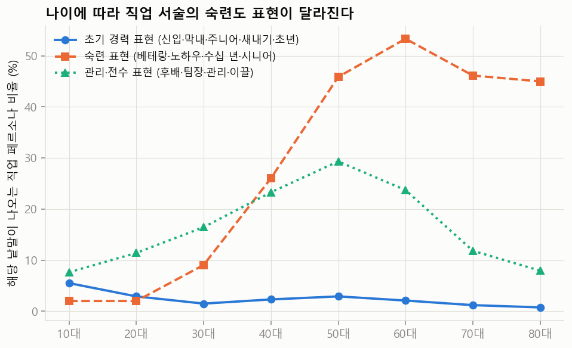
| 연령대 | 취업자 수 | 초기 경력 표현 (신입·막내·주니어·새내기·초년) | 숙련 표현 (베테랑·노하우·수십 년·시니어) | 관리·전수 표현 (후배·팀장·관리·이끌) |
|---|---|---|---|---|
| 10대 | 798 | 5.51 | 2.01 | 7.64 |
| 20대 | 78,246 | 2.91 | 2.01 | 11.42 |
| 30대 | 119,388 | 1.5 | 9.06 | 16.46 |
| 40대 | 139,631 | 2.32 | 26.04 | 23.29 |
| 50대 | 152,907 | 2.91 | 45.87 | 29.33 |
| 60대 | 75,209 | 2.1 | 53.33 | 23.71 |
| 70대 | 33,721 | 1.2 | 46.13 | 11.84 |
| 80대 | 8,538 | 0.76 | 44.99 | 7.93 |
숙련 표현은 나이와 함께 가파르게 늘어난다. 반면 초기 경력 표현은 20대에서도 드물다. 즉 이 데이터에는 '베테랑'은 많지만 '신입다운 신입'의 서술은 빈약하다.
프로그래머의 연령대별 예시
27세 남자 · 4년제 대학교 · 게임 프로그래머
- 직업 페르소나
- 이성민 씨는 유니티 엔진을 활용해 게임 내 물리 연산의 오차를 줄이는 정교한 최적화 작업에 몰두하며, 동료들이 쉽게 지나치는 예외 상황을 꼼꼼하게 잡아내어 빌드의 완성도를 높입니다. 이성민 씨는 안정적인 직장 생활을 유지하면서도 퇴근 후에는 자신만의 독창적인 메커니즘을 담은 인디 게임 프로토타입을 설계해 스팀에 정식 출시하겠다는 구체적인 목표를 가지고 코드를 짭니다.
- 기술 목록
- ['C# 언어 숙련', '유니티 엔진 최적화', '깃허브 버전 관리', '게임 로직 설계']
- 경력 목표
- 현재의 안정적인 직장 생활을 기반으로 삼아, 틈틈이 자신만의 독창적인 메커니즘이 담긴 인디 게임 프로토타입을 완성해 스팀에 정식 출시하는 것을 목표로 합니다.
30세 남자 · 4년제 대학교 · 모바일 애플리케이션 프로그래머
- 직업 페르소나
- 박세인 씨는 교육 플랫폼의 사용자 인터페이스를 설계하는 모바일 앱 개발자로, 현장의 피드백을 즉각 반영하는 기민한 개발 방식으로 팀 내에서 인정받고 있습니다. 다만 꼼꼼한 문서화나 체계적인 일정 관리보다는 일단 코드를 짜고 보는 즉흥적인 성격 탓에, 가끔 동료들과의 협업 과정에서 소통의 혼선을 빚기도 합니다.
- 기술 목록
- ['코틀린 기반 안드로이드 앱 개발', '교육용 UI/UX 최적화', 'REST API 연동 및 데이터베이스 관리', '리액트 네이티브 교차 플랫폼 개발']
- 경력 목표
- 단순한 기능 구현을 넘어 학습자의 심리를 자극하는 혁신적인 에듀테크 서비스를 기획하여 업계에서 독보적인 포트폴리오를 구축하고 싶어 합니다.
46세 남자 · 4년제 대학교 · 범용 소프트웨어 프로그래머
- 직업 페르소나
- 진성태 씨는 교육 현장의 복잡한 행정 요구사항을 명료한 소프트웨어 구조로 설계하며, 특히 학습자의 비판적 사고를 돕는 직관적인 인터페이스 구현에 탁월한 성과를 냅니다. 인문학적 소양을 바탕으로 기술이 인간을 소외시키지 않고 사고의 확장을 돕는 에듀테크 솔루션을 구축하는 일에 매진하고 있습니다.
- 기술 목록
- ['파이썬 기반 백엔드 시스템 설계', '에듀테크 맞춤형 UX 인터페이스 최적화', '교육 행정 데이터베이스 구조 설계', '인문학적 관점의 기술 문서 작성']
- 경력 목표
- 단순한 기능 구현을 넘어 학습자의 비판적 사고를 자극하는 인문학 기반의 에듀테크 솔루션을 구축하고자 합니다. 기술이 인간의 소외를 부추기지 않고 사고의 확장을 돕는 도구가 되는 플랫폼을 만드는 것에 가치를 둡니다.
51세 여자 · 고등학교 · 데이터 설계 및 프로그래머
- 직업 페르소나
- 김미애 씨는 교육 서비스 기관에서 수강생 관리 시스템의 데이터베이스 구조를 설계하고 백엔드 로직을 구현하는 실무형 개발자입니다. 후배들이 실수 없이 업무를 수행하도록 아주 세밀한 부분까지 기록한 업무 매뉴얼을 만드는 데 집착하며, 가끔은 지나치게 꼼꼼한 검토 과정 때문에 동료들이 숨 막혀 하기도 합니다.
- 기술 목록
- ['관계형 데이터베이스 설계', '교육용 학습 관리 시스템 유지보수', 'SQL 쿼리 최적화', '데이터 무결성 검증 및 관리']
- 경력 목표
- 현재 운영 중인 교육 시스템이 큰 사고 없이 매끄럽게 돌아가도록 관리하며, 후배 개발자들이 바로 활용할 수 있는 명확하고 구체적인 업무 매뉴얼을 완성하는 것에 가치를 둡니다.
결론부터
만들 수 있다. 다만 이 데이터를 "잘라서" 만들 수는 없고, 이 데이터를 "시드 데이터로 삼아 다시 생성"해야 한다.
이 데이터에는 직급도 경력 연수도 없다. 그래서 "개발자 중 대리급만 골라내기"는 불가능하다. 대신 이 데이터는 직업별로 현실적인 인구통계 변수 조합(나이, 학력, 전공, 지역, 성별)을 준다. 여기에 수준 변수를 새로 설계해 얹고, 직업 관련 서술만 수준에 맞게 다시 쓰게 하면 된다. 이것은 NVIDIA가 이 데이터를 만든 방식(인구통계 변수 샘플링 → LLM 서술)과 똑같은 구조다. NVIDIA도 이 데이터의 용도를 그렇게 안내한다.
이 데이터가 주는 것
- 직업별 현실적인 인구 구성: 약 1,800개 직업마다 누가 그 일을 하는지(나이, 성별, 학력, 전공, 지역)가 통계에 맞게 들어 있다. 직무 페르소나를 상상으로 만들 때 가장 틀리기 쉬운 부분이다.
- 한 직군 안의 넓은 나이 분포: 프로그래머만 봐도 20대부터 60대까지 있다. 수준을 나눌 재료가 된다.
- 나이에 따라 달라지는 서술: LLM이 나이를 보고 "베테랑", "노하우", "후배" 같은 표현을 알아서 넣었다. 나이가 숙련도의 대리 지표로 이미 작동하고 있다는 뜻이다.
- 풍부한 맥락: 직업 페르소나, 기술 목록, 경력 목표, 문화적 배경이 한 사람 안에서 서로 이어져 있다. 직무 기술서에는 없는 개인의 구체적인 생활 맥락이 있다.
이 데이터에 없는 것
- 직급, 경력 연수, 근속, 회사 규모, 산업: 변수로는 하나도 없다. 글에서도 직급 낱말은 드물고 숫자로 된 경력은 거의 안 나온다.
- 신입다운 신입: 숙련 표현은 나이와 함께 가파르게 늘지만, 초기 경력 표현은 20대에서도 드물다. LLM이 누구든 "제 몫을 하는 직업인"으로 그린 탓이다. 가장 만들고 싶을 신입·주니어 쪽 재료가 가장 빈약하다.
- 채용 시장의 직무 이름: 직업은 한국표준직업분류의 이름이다. "범용 소프트웨어 프로그래머"는 있어도 "백엔드 개발자", "데이터 엔지니어"는 없다.
- 표준화된 기술: 기술 항목은 대부분 한 번만 나오는 자유 서술이다. 수준별로 기술을 비교하려면 먼저 묶어야 한다.
- 시간의 흐름: 모든 사람이 한 시점의 단면이다. 한 사람이 신입에서 과장이 되는 궤적은 없다.
- 직업의 3분의 1 이상이 '무직': 직무 페르소나에 쓸 수 있는 행은 나머지다. 세부 직업에 따라서는 행 수가 수백 개에 그친다.
직급 이름에 대해
말씀하신 "신입 – 대리 – 주임"은 보통의 순서로는 사원 – 주임 – 대리 – 과장 – 차장 – 부장이다. 다만 이 직급 체계를 수준의 기준으로 삼는 것은 권하지 않는다. 회사마다 다르고, 직급을 없애고 "님"이나 "프로"로 부르는 곳이 많고, 공공·의료·교육·생산직에는 아예 맞지 않는다.
SQF를 떠올리신 방향이 맞다. 수준의 기준은 국가직무능력표준(NCS)의 8수준 체계와 산업별역량체계(SQF)로 잡는 편이 좋다. 이유는 세 가지다.
- 수준마다 지식, 기술, 자율성과 책임의 기술문(descriptor)이 있다. LLM에게 "5수준답게 써라"라고 지시할 근거 문장이 된다.
- SQF는 산업별로 직무 × 수준의 격자를 이미 그려 두었다. 이 격자가 곧 만들어야 할 페르소나의 설계도다. 페르소나 데이터는 각 칸에 들어갈 "사람"을 채운다.
- 직급 이름은 마지막에 표시용 라벨로만 붙이면 된다. 예: 5수준 = 대리급.
만드는 방법 세 가지
방법 A. 나이로 잘라 쓰기 (가장 빠름, 가장 거침)
잠재 경력 연수 = 나이 − 학력별 졸업 추정 나이(남성은 군 복무 기간 추가 고려)를 계산해 구간으로 나눈다. 기존 글을 그대로 쓴다. 하루면 된다. 하지만 전직자, 늦은 입직, 경력 단절이 모두 오차가 된다. 글이 수준에 맞게 쓰인 것도 아니다. 탐색용으로만 쓸 만하다.
방법 B. 수준을 얹어 다시 생성하기 (권장)
- 대상 직군의 행을 뽑아 인구통계 변수(나이, 성별, 학력, 전공, 지역, 직업)만 남긴다.
level변수를 새로 뽑는다. 잠재 경력 연수에 따른 조건부 확률표로 뽑아야 "45세 신입"도 현실만큼은 나온다. 확률표의 근거로는 고용노동부의 고용형태별근로실태조사 같은 근속·직급 통계를 쓸 수 있다.- NCS 수준 기술문과 인구통계 변수를 프롬프트에 넣어 직업 페르소나, 기술 목록, 경력 목표만 다시 쓰게 한다. 가족·여행·음식 같은 나머지 페르소나는 그대로 둔다.
- 규칙과 LLM 심사로 수준과 글이 맞는지 걸러낸다.
이 흐름은 scripts/10_toy_pgm.py의 구조 그대로다. 로컬 모델로도 돌릴 수 있고, NeMo Data Designer가 바로 이런 작업을 위한 도구다.
방법 C. 한 사람의 수준 사다리 만들기
같은 사람을 3수준, 5수준, 7수준의 시점으로 각각 서술하게 한다. 원 데이터에 없는 "성장 궤적"이 생긴다. 교육과정 설계나 경력 개발 연구처럼 수준 간 차이가 관심사라면 이쪽이 더 쓸모 있다. 다만 전부 LLM의 상상이라 검증 부담이 가장 크다.
조심할 점
- 나이와 수준을 같은 것으로 만들지 말 것: 나이로만 수준을 정하면 "나이 든 주니어", "젊은 관리자"가 사라지고 연령 고정관념이 굳는다. 수준은 반드시 확률적으로 뽑아야 한다.
- 합성 위에 합성: 이미 LLM이 쓴 데이터를 바탕으로 또 LLM이 쓴다. 고정관념과 말투의 틀이 겹쳐 짙어질 수 있다. 인구통계 변수만 가져오고 서술문은 새로 쓰는 편이 안전하다.
- LLM이 지어내는 기술: 그럴듯하지만 그 수준에 맞지 않는 기술을 쓸 수 있다. NCS 능력단위를 선택지로 주고 그 안에서 고르게 하면 줄일 수 있다.
- 검증이 곧 연구의 핵심이 된다: 수준별 페르소나의 가치는 "수준이 정말 구분되는가"에 달려 있다. 현직자나 인사 담당자의 평정(안면 타당도), 글만 보고 수준을 맞히는 분류기(구성 타당도), 수준과 글의 일치율(내적 일관성)이 필요하다. 검증 방법 제안서의 R3, V4, V5가 그대로 쓰인다.
권하는 첫걸음
직군 하나(프로그래머 계열)와 수준 3~4개로 작은 시범을 해 보는 것이다. 순서는 이렇다.
- 소프트웨어 분야 SQF에서 직무 × 수준 격자와 수준 기술문을 가져온다.
- 이 데이터에서 프로그래머 계열 행을 뽑아 방법 A로 나눠 보고, 기존 글이 수준을 얼마나 반영하는지 눈으로 읽는다.
- 수준별로 10명씩만 방법 B로 다시 생성해 본다.
- 현직 개발자 한두 명에게 "이 사람이 몇 년 차로 보이는가"를 물어본다.
여기까지 해 보면 본 연구로 키울 만한지 판단할 수 있다.
이 결과를 만든 코드 보기: scripts/05_job_level_probe.py — 직급 낱말 빈도, 직군별 나이 분포, 연령대별 숙련도 표현
"""5단계(탐색): 이 데이터로 '수준별 직무 페르소나'(신입-대리-과장 식)를 만들 수 있을까?
확인하려는 것
1) 직급이나 경력 연수를 나타내는 변수가 있는가? -> 없다. 텍스트에 흔적이 있는지 센다.
2) 한 직업 안에 나이가 고르게 퍼져 있는가? -> 나이를 경력의 대리 지표로 쓸 수 있는지 본다.
3) 나이가 달라지면 직업 서술의 숙련도 표현도 달라지는가? -> 연령대별로 숙련도를 나타내는 낱말의 빈도를 센다.
"""
import json
import polars as pl
import config as C
plt = C.setup_matplotlib()
COLS = ["age", "sex", "education_level", "bachelors_field", "occupation",
"professional_persona", "skills_and_expertise", "skills_and_expertise_list", "career_goals_and_ambitions"]
df = pl.scan_parquet(C.parquet_glob()).select(COLS).collect()
N = df.height
work = df.filter(~pl.col("occupation").str.contains("무직|구직")) # 현재 일하는 사람만
W = work.height
res = {"n_rows": N, "n_employed": W, "n_occupations": df["occupation"].n_unique()}
print("전체", N, "취업자", W, "직업 종류", res["n_occupations"])
# ---------------------------------------------------------------- 1. 직급·연차 표현이 텍스트에 얼마나 나오나
RANK_WORDS = ["신입", "사원", "주임", "대리", "과장", "차장", "부장", "팀장", "임원", "주니어", "시니어"]
LEVEL_WORDS = ["베테랑", "수십 년", "노하우", "후배", "막내", "초년", "새내기", "배우", "은퇴"]
YEARS_PATTERN = r"\d{1,2}\s*년\s*(?:차|간|째|동안|이상|넘게|가까이)" # "15년간", "3년 차" 같은 숫자 경력
def pct_contains(frame, col, pattern):
return round(frame.filter(pl.col(col).str.contains(pattern)).height / frame.height * 100, 2)
res["rank_words"] = [
{"word": w, "professional_pct": pct_contains(work, "professional_persona", w),
"career_goals_pct": pct_contains(work, "career_goals_and_ambitions", w)} for w in RANK_WORDS + LEVEL_WORDS
]
any_rank = "|".join(RANK_WORDS)
res["any_rank_word_pct"] = pct_contains(work, "professional_persona", any_rank)
res["numeric_years_pct"] = round(
work.filter(pl.col("professional_persona").str.contains(YEARS_PATTERN)
| pl.col("skills_and_expertise").str.contains(YEARS_PATTERN)).height / W * 100, 2)
print("직급 낱말이 하나라도 있는 직업 페르소나:", res["any_rank_word_pct"], "%")
print("숫자로 된 경력 연수 표현:", res["numeric_years_pct"], "%")
# ---------------------------------------------------------------- 2. 한 직군 안의 나이 분포 (예: 프로그래머)
GROUPS = {
"프로그래머": "프로그래머",
"간호사": "간호사",
"회계·경리 사무원": "회계 사무원|경리 사무원",
"초·중등 교사": "초등학교 교사|중·고등학교 교사",
}
work = work.with_columns(((pl.col("age") // 10) * 10).alias("decade"))
res["groups"] = {}
for label, pat in GROUPS.items():
g = work.filter(pl.col("occupation").str.contains(pat))
dist = g.group_by("decade").len().sort("decade")
res["groups"][label] = {
"n": g.height,
"occupations": g.group_by("occupation").len().sort("len", descending=True).head(8).to_dicts(),
"age_dist": [{"decade": r[0], "n": r[1], "pct": round(r[1] / g.height * 100, 1)} for r in dist.iter_rows()],
}
print(label, g.height, "명", [(d["decade"], d["pct"]) for d in res["groups"][label]["age_dist"]])
# ---------------------------------------------------------------- 3. 나이에 따라 숙련도 표현이 달라지나 (전체 취업자)
SIGNALS = {
"초기 경력 표현 (신입·막내·주니어·새내기·초년)": "신입|막내|주니어|새내기|초년|사회초년",
"숙련 표현 (베테랑·노하우·수십 년·시니어)": "베테랑|노하우|수십 년|시니어|오랜",
"관리·전수 표현 (후배·팀장·관리·이끌)": "후배|팀장|관리자|이끌|총괄|임원",
}
by_age = []
for dec in sorted(work["decade"].unique().to_list()):
g = work.filter(pl.col("decade") == dec)
if g.height < 200:
continue
row = {"decade": dec, "n": g.height}
for name, pat in SIGNALS.items():
row[name] = pct_contains(g, "professional_persona", pat)
by_age.append(row)
res["signals_by_age"] = by_age
for r in by_age:
print(r)
fig, ax = plt.subplots(figsize=(8, 4.6))
xs = [f"{r['decade']}대" for r in by_age]
styles = [(C.COLOR_1, "-", "o"), (C.COLOR_2, "--", "s"), ("#1baf7a", ":", "^")]
for (name, _), (color, ls, mk) in zip(SIGNALS.items(), styles):
ax.plot(xs, [r[name] for r in by_age], color=color, linestyle=ls, marker=mk, linewidth=2, markersize=6, label=name)
ax.set_ylabel("해당 낱말이 나오는 직업 페르소나 비율 (%)")
ax.set_title("나이에 따라 직업 서술의 숙련도 표현이 달라진다", loc="left", fontweight="bold")
ax.legend(frameon=False, fontsize=9)
fig.savefig(C.FIG_DIR / "job_level_signals.png")
plt.close(fig)
# ---------------------------------------------------------------- 4. 프로그래머의 연령대별 예시
prog = work.filter(pl.col("occupation").str.contains("프로그래머"))
examples = []
for dec in (20, 30, 40, 50):
pool = prog.filter(pl.col("decade") == dec)
if pool.height:
r = pool.sample(1, seed=C.SEED).row(0, named=True)
examples.append({k: r[k] for k in ["age", "sex", "education_level", "occupation", "professional_persona",
"skills_and_expertise_list", "career_goals_and_ambitions"]})
res["programmer_examples"] = examples
out = C.PROCESSED_DIR / "summary_job_level.json"
out.write_text(json.dumps(res, ensure_ascii=False, indent=2, default=str), encoding="utf-8")
print("저장:", out)
8신뢰도·타당도 검증 방법 제안
- 대상: NVIDIA Nemotron-Personas-Korea (Hugging Face판 v1.0)
- 성격: 방법 제안만 한다. 이 프로젝트에서는 실행하지 않는다.
- 작성일: 2026-09-20
1. 왜 측정이론의 말을 빌리는가
신뢰도와 타당도는 원래 검사 도구(시험, 설문)를 평가하는 말이다. 합성 데이터에 그대로 쓸 수는 없지만, 묻는 내용은 같다.
| 측정이론의 질문 | 합성 데이터로 옮긴 질문 |
|---|---|
| 신뢰도: 다시 재도 같은 값이 나오는가? | 표본을 바꾸거나 평가자를 바꿔도 같은 결론이 나오는가? 한 행 안의 정보가 서로 모순되지 않는가? |
| 타당도: 재려던 것을 재고 있는가? | 이 데이터가 "한국 성인 인구"를 실제로 닮았는가? 텍스트가 인구통계 변수를 제대로 반영하는가? |
합성 데이터 평가 문헌은 보통 세 축을 쓴다. 충실도(fidelity, 실제와 닮았는가), 효용(utility, 쓸모가 있는가), 프라이버시(privacy, 실제 개인이 드러나지 않는가)다. 아래 제안은 충실도를 타당도 쪽에, 재현성과 일관성을 신뢰도 쪽에 배치했다.
이 데이터는 두 층으로 되어 있어 검증도 두 층으로 나뉜다.
- 인구통계 변수 층: 확률적 그래프 모델이 뽑은 12개 인구통계·지리 변수. 공식 통계라는 정답지가 있다.
- 서술문 층: LLM이 쓴 13개 서술 필드. 정답지가 없어 일관성·자연스러움·편향을 봐야 한다.
선행 독립 감사(eopchang/nemotron-personas-korea-audit)는 인구통계 변수 층만 다뤘다. 서술문 층은 아직 아무도 검증하지 않았다.
2. 방법 한눈에 보기
비용 등급: ① 로컬·무료, ② 로컬 모델 필요, ③ 사람 또는 유료 API 필요
| 번호 | 구분 | 개념 | 핵심 지표 | 비용 | 선행 감사 |
|---|---|---|---|---|---|
| R1 | 신뢰도 | 표본 안정성 | 부분표본 간 TVD, 지표의 변동계수 | ① | 수행함 |
| R2 | 신뢰도 | 추정 정밀도 | 부트스트랩 95% 신뢰구간 | ① | 수행함 |
| R3 | 신뢰도 | 내적 일관성 | 변수-서술문 일치율 | ① 또는 ② | 안 함 |
| R4 | 신뢰도 | 평정자 간 일치 | Cohen κ, Krippendorff α | ③ | 안 함 |
| V1 | 타당도 | 준거(통계적 충실도) | TVD, Jensen-Shannon 거리 | ① | 수행함 |
| V2 | 타당도 | 구조 | 조건부 분포 차이, Cramér V, CMI 골격 | ① | 수행함 |
| V3 | 타당도 | 내용 | 공식 분류 대비 누락 범주 | ① | 일부 |
| V4 | 타당도 | 구성(수렴·변별) | 텍스트로 인구통계 변수 예측 | ② | 안 함 |
| V5 | 타당도 | 안면 | 5점 척도 전문가 평정 | ③ | 안 함 |
| F1 | 공정성 | 편향·고정관념 | 집단별 어휘의 로그 오즈비 | ① | 안 함 |
| P1 | 프라이버시 | 실존 인물 충돌 | 속성 조합의 유일성 | ① | 안 함 |
3. 신뢰도 방법
R1. 표본 안정성
- 정의: 같은 절차를 다른 표본에 적용해도 같은 결과가 나오는 정도.
- 합성 데이터에서의 의미: 100만 행에서 20만 행을 여러 번 뽑아도 분포와 연관 지표가 같아야 한다. 같지 않다면 어떤 결론도 "우연히 뽑힌 표본"의 산물일 수 있다.
- 지표: 부분표본 쌍 사이의 총변동거리(TVD). 연관 지표(Cramér V 등)의 변동계수(표준편차 ÷ 평균).
- 필요한 자료: 데이터셋만 있으면 된다.
- 절차:
- 시드 5개를 정하고 각각 20만 행을 비복원 추출한다.
- 변수마다 부분표본 10쌍의 TVD를 구한다.
- 변수쌍마다 연관 지표를 5번 구해 변동계수를 낸다.
- 기준을 넘는 변수와 변수쌍을 "불안정"으로 표시한다.
- 예상되는 어려움: 범주가 많은
occupation(약 2,120개)과district(252개)는 희소 범주 때문에 TVD가 커진다. 상위 범주만 쓰거나 대분류로 묶어야 한다. - 기준 예시: 부분표본 간 TVD 0.01 미만.
- 선행 감사: 수행함. 55쌍 중 52쌍이 5개 시드에서 안정적이었다.
- 참고문헌: Efron & Tibshirani (1993), An Introduction to the Bootstrap.
R2. 추정 정밀도
- 정의: 지표 값이 얼마나 불확실한지.
- 합성 데이터에서의 의미: "TVD가 0.005다"보다 "0.005이고 95% 구간이 0.004~0.006이다"가 훨씬 쓸모 있다.
- 지표: 부트스트랩 백분위 95% 신뢰구간의 폭.
- 절차:
- 데이터에서 같은 크기로 복원 추출을 1,000번 한다.
- 매번 지표를 다시 계산한다.
- 2.5 백분위와 97.5 백분위를 구간으로 보고한다.
- 예상되는 어려움: 100만 행에 1,000번은 느리다. 20만 행 표본에 200번으로 줄여도 충분하다.
- 선행 감사: 조건부 상호정보량에 부트스트랩 구간을 붙였다.
- 참고문헌: Efron & Tibshirani (1993).
R3. 내적 일관성 (변수-서술문 일치)
- 정의: 한 도구의 문항들이 서로 같은 것을 가리키는 정도. 설문에서는 Cronbach α로 잰다.
- 합성 데이터에서의 의미: 한 행 안에서 인구통계 변수와 텍스트가 모순되지 않아야 한다. 예:
age가 72인데 텍스트가 "신입 사원"이라고 하면 모순이다. 7개 페르소나끼리도 서로 어긋나면 안 된다. - 지표: 일치율 = 모순 없는 행 ÷ 점검한 행. 필드별, 모순 유형별로 나눠 본다.
- 필요한 자료: 데이터셋. LLM 방식은 로컬 모델이 추가로 필요하다.
- 절차 (규칙 기반, 비용 ①):
- 연령대 × 성별 × 수도권 여부로 층화해 2,000행을 뽑는다.
- 텍스트에서 지역명, 나이 표현("50대", "일흔"), 혼인·자녀 표현, 직업명을 정규식으로 뽑는다.
- 뽑은 값을 같은 행의 인구통계 변수와 대조한다.
- 모순 후보를 사람이 50건 정도 눈으로 확인해 규칙의 오탐률을 잰다.
- 절차 (LLM 심사, 비용 ②):
- 같은 표본의 행마다 인구통계 변수와 텍스트를 로컬 모델에 준다.
- "일치 / 모순 / 판단불가"와 근거 문장을 JSON으로 받는다.
- 규칙 기반 결과와 비교해 두 방식이 어긋나는 행을 따로 본다.
for row in sample:
facts = extract_by_regex(row.text) # {"province": "부산", "age_band": "50대"}
truth = {"province": row.province, "age_band": band(row.age)}
verdict = compare(facts, truth) # 일치 / 모순 / 언급없음
- 예상되는 어려움: 텍스트가 인구통계 변수를 언급하지 않는 경우가 많다. "언급 없음"을 모순으로 세면 안 된다. 나이는 "은퇴 후" 같은 간접 표현으로 나와 규칙만으로는 잡기 어렵다.
- 기준 예시: 명시적으로 언급된 사실의 일치율 95% 이상.
- 선행 감사: 안 함. 이 데이터에서 가장 비어 있는 검증이다.
- 참고문헌: Zheng et al. (2023), "Judging LLM-as-a-Judge with MT-Bench and Chatbot Arena"; Min et al. (2023), "FActScore".
R4. 평정자 간 일치
- 정의: 서로 다른 평가자가 같은 대상에 같은 점수를 주는 정도.
- 합성 데이터에서의 의미: "이 페르소나는 자연스럽다"는 판단이 평가자 개인의 취향이 아니어야 한다. V5(안면 타당도)의 전제 조건이다.
- 지표: Cohen κ(평가자 2명, 서열 척도면 가중 κ), Krippendorff α(평가자 3명 이상 또는 결측이 있을 때).
- 필요한 자료: 평가자 2명 이상, 평가 기준표, 표본 200행.
- 절차:
- 평가 기준표를 만들고 10행으로 연습해 기준을 맞춘다.
- 평가자들이 서로 보지 않고 같은 200행을 채점한다.
- 차원별로 κ 또는 α를 계산한다.
- 0.6 미만인 차원은 기준표를 고쳐 다시 한다.
- 예상되는 어려움: 평가자를 구하기 어렵다. 대안으로 서로 다른 로컬 모델 2개를 평가자로 써서 모델 간 일치도를 볼 수 있지만, 이것은 사람의 판단을 대신하지 못한다.
- 기준 예시: κ 0.6 이상이면 상당한 일치(Landis & Koch 기준).
- 선행 감사: 안 함.
- 참고문헌: Landis & Koch (1977); Krippendorff (2018), Content Analysis.
4. 타당도 방법
V1. 준거 타당도 (통계적 충실도)
- 정의: 검사 점수가 바깥의 믿을 만한 기준과 일치하는 정도.
- 합성 데이터에서의 의미: 기준은 공식 통계다. 성별·시도·혼인·학력·주거의 분포가 KOSIS와 같아야 한다.
- 지표: 총변동거리(TVD) = 범주별 비율 차이의 절댓값 합 ÷ 2. 0이면 같고 1이면 완전히 다르다. 보조로 Jensen-Shannon 거리와 범주별 %p 차이를 쓴다.
- 필요한 자료: KOSIS 인구총조사(2020)와 주민등록인구 통계. 통계표 ID와 기준 연도를 기록해야 한다.
- 절차:
- 변수마다 대응하는 KOSIS 통계표를 찾는다.
- 모집단을 19세 이상으로 맞춘다.
- 범주 대응표를 만든다. 데이터의 범주와 KOSIS 범주가 다르면 큰 쪽으로 묶는다.
- TVD와 범주별 차이를 계산한다.
- 기준 연도를 바꿔 결과가 얼마나 달라지는지 본다.
- 예상되는 어려움: 카드가 어느 연도 통계를 썼는지 밝히지 않았다. 연도가 다르면 데이터가 틀린 게 아니어도 차이가 난다. 범주 체계가 달라 1:1 대응이 안 되는 변수도 있다(
family_type39종). - 기준 예시: TVD 0.05 미만.
- 선행 감사: 수행함. 시도 분포 TVD 0.005, 17개 시도 모두 ±0.24%p 이내.
- 참고문헌: Jordon et al. (2022), "Synthetic Data: what, why and how?"; SDMetrics 문서.
V2. 구조 타당도
- 정의: 검사의 내부 구조(요인 구조)가 이론과 맞는 정도.
- 합성 데이터에서의 의미: 변수 하나하나의 분포가 맞아도 변수 사이의 관계가 틀릴 수 있다. 20대 미혼율과 70대 사별률이 현실과 같아야 한다. 확률적 그래프 모델을 썼다는 주장의 핵심이 여기에 있다.
- 지표: 조건부 분포의 셀별 %p 차이. 연관 강도(Cramér V, 정규화 상호정보량, Theil U). 조건부 상호정보량(CMI)으로 복원한 의존 골격.
- 필요한 자료: KOSIS 교차 통계표(연령×혼인, 연령×학력 등). 셀 단위 자료가 있는 조합만 비교할 수 있다.
- 절차:
- 11개 변수의 55쌍 전부에 연관 지표를 계산해 히트맵을 그린다.
- 교차 통계표가 있는 쌍은 셀 단위로 공식 통계와 비교한다.
- 범주가 많은 변수가 든 쌍은 순열 검정으로 편향을 보정한다. 한 변수를 무작위로 섞어 100번 지표를 구하고, 그 평균을 원래 값에서 뺀다.
- 관계가 있어야 하는데 없는 쌍, 없어야 하는데 있는 쌍을 찾는다.
- 예상되는 어려움: 범주가 많으면 상호정보량이 실제보다 크게 추정된다. 선행 감사에서 의존 간선 23개 중 11개가 이 보정에서 탈락했다. 공식 통계에 3변수 이상의 교차표는 거의 없다.
- 선행 감사: 수행함. 연령→혼인→가구, 연령→학력은 인구총조사와 ±4%p 이내로 일치했다. 주거형태는 가구 구성과 사실상 독립이었고, 병역은 직업에서 그대로 결정됐다.
- 참고문헌: Bergsma (2013), Cramér V 편향 보정; Spirtes, Glymour & Scheines (2000), Causation, Prediction, and Search.
V3. 내용 타당도
- 정의: 검사 문항이 재려는 영역 전체를 빠짐없이 대표하는 정도.
- 합성 데이터에서의 의미: 한국 성인 인구의 범주를 빠뜨리지 않아야 한다. 또 어떤 집단이 애초에 설계에서 빠졌는지 알아야 한다.
- 지표: 공식 분류 대비 누락 범주 수. 희소 범주 비율. 설계상 제외된 집단 목록.
- 절차:
- 한국표준직업분류, 행정구역, 학력 분류와 데이터의 범주를 대조한다.
- 데이터에 없는 범주와 100행 미만인 범주를 목록으로 만든다.
- 카드가 밝힌 제외 대상을 정리한다.
- 이미 알려진 공백: 19세 미만, 외국인·이주민, 성별 정체성, 장애, 소득. 직업의 36.7%가 주부·학생·은퇴자·실업을 합친 "무직" 한 범주다.
- 선행 감사: 일부 수행. "무직"이 단일 범주로 통합된 점을 지적했다.
- 참고문헌: Gebru et al. (2021), "Datasheets for Datasets".
V4. 구성 타당도 (수렴·변별)
- 정의: 점수가 이론상 관련 있는 것과는 관련되고(수렴), 관련 없는 것과는 관련되지 않는(변별) 정도.
- 합성 데이터에서의 의미: 페르소나 텍스트가 인구통계 변수의 정보를 실제로 담고 있어야 한다. 텍스트만 보고 직업 대분류나 연령대를 맞힐 수 있다면 텍스트가 조건을 반영한 것이다.
- 지표: 텍스트 임베딩으로 인구통계 변수를 예측한 정확도 ÷ 우연 수준 정확도.
- 필요한 자료: 로컬 다국어 문장 임베딩 모델. 5만 행 표본.
- 절차:
persona필드를 임베딩한다.- 로지스틱 회귀로 직업 대분류, 연령대, 시도를 5겹 교차검증으로 예측한다.
- 관련 없어야 하는 값(UUID 첫 글자 등)도 예측해 우연 수준이 나오는지 확인한다.
- 7개 페르소나 필드별로 어떤 인구통계 변수가 잘 읽히는지 비교한다.
- 예상되는 어려움: 텍스트에 직업명이나 지역명이 글자 그대로 들어 있으면 예측이 너무 쉬워 의미가 없다. 고유명사를 가린 뒤 다시 해야 한다.
- 기준 예시: 우연 수준의 2배 이상.
- 선행 감사: 안 함.
- 참고문헌: Campbell & Fiske (1959), 다특성-다방법 행렬; Belinkov (2022), "Probing Classifiers".
V5. 안면 타당도
- 정의: 전문가나 당사자가 보기에 그럴듯한 정도.
- 합성 데이터에서의 의미: 한국인이 읽었을 때 말투가 자연스럽고, 인물이 있을 법하고, 문화적으로 어색하지 않아야 한다.
- 지표: 4개 차원 × 5점 척도의 평균. 차원은 한국어 자연스러움, 인물의 그럴듯함, 문화적 적절성, 고정관념 정도.
- 절차:
- R3의 층화 표본에서 200행을 뽑는다.
- 평가자 2명 이상이 기준표로 채점한다.
- R4로 일치도를 먼저 확인한 뒤 평균을 낸다.
- 낮은 점수를 받은 행의 공통점을 질적으로 정리한다.
- 예상되는 어려움: 가장 비용이 크다. 평가자에 따라 "그럴듯함"의 기준이 세대·지역별로 다르다.
- 선행 감사: 안 함.
- 참고문헌: Nevo (1985), "Face validity revisited".
5. 공정성과 프라이버시
F1. 편향·고정관념 점검
- 합성 데이터에서의 의미: 인구통계 변수 층은 현실 분포를 따르므로 현실의 격차를 그대로 담는다. 문제는 서술문 층이다. LLM이 "70대 여성 = 손주 돌봄, 요리"처럼 통계보다 더 틀에 박힌 묘사를 덧붙였을 수 있다.
- 지표: 집단별(성별, 연령대, 수도권 여부) 취미·기술 항목의 로그 오즈비. 집단 안에서의 다양성(고유 항목 수, 엔트로피).
- 절차:
hobbies_and_interests_list와skills_and_expertise_list를 항목 단위로 푼다.- 집단 쌍마다 항목별 로그 오즈비를 구해 상위 20개를 본다.
- 같은 직업·연령대 안에서 성별만 다를 때도 차이가 남는지 본다.
- 예상되는 어려움: "현실 반영"과 "고정관념 증폭"을 가르려면 실제 취미 통계(국민여가활동조사)가 필요하다. 없으면 차이를 보고만 하고 판정은 하지 않는다.
- 참고문헌: Monroe, Colaresi & Quinn (2008), "Fightin' Words"; Cheng, Durmus & Jurafsky (2023), "Marked Personas".
P1. 실존 인물 충돌
- 합성 데이터에서의 의미: 완전 합성이라 개인정보는 없다. 다만 이름 + 시군구 + 직업 + 나이 조합이 실존 인물과 우연히 겹칠 수 있다.
- 지표: 속성 조합의 유일성(k-익명성의 k 분포). 유명인 이름 100개의 출현 여부와 직업 일치 여부.
- 절차:
- 텍스트에서 이름을 뽑는다.
- 이름 + 시군구 + 직업 + 나이 조합이 데이터 안에서 몇 번 나오는지 센다.
- 공인 이름 목록과 대조해, 이름과 직업이 함께 겹치는 행이 있는지 본다.
- 예상되는 어려움: 카드에 따르면 약 79%의 행에 동명이인이 있다. 이름만 겹치는 것은 문제가 아니다.
- 참고문헌: Sweeney (2002), "k-Anonymity"; Stadler, Oprisanu & Troncoso (2022), "Synthetic Data – Anonymisation Groundhog Day".
6. 나중에 실제로 검증한다면 추천하는 순서
- 선행 감사 읽기: 인구통계 변수 층은 이미 검증됐다. 보고서를 읽고 인용하는 것으로 V1, V2, R1, R2의 대부분을 덮을 수 있다.
- R3 규칙 기반 일치 점검: 로컬에서 무료로 되고, 아무도 하지 않은 부분이다. 2,000행이면 하루 작업이다.
- V3 내용 공백 정리: 분류표 대조만으로 된다. 내 연구의 대상 집단이 데이터에 있는지부터 확인한다.
- F1 어휘 편향 점검: 리스트 필드만 쓰면 되어 가볍다.
- V4, V5, R4: 로컬 모델이나 평가자가 확보됐을 때만 한다.
7. 용도별로 무엇을 봐야 하는가
| 쓰려는 용도 | 꼭 봐야 할 방법 | 이유 |
|---|---|---|
| LLM 학습용 다양성 확보 | R3, F1 | 텍스트 품질과 편향이 그대로 모델에 들어간다 |
| 지역·연령별 인구 시뮬레이션 | V1, V2 | 분포와 관계가 맞아야 한다. 선행 감사가 대체로 확인했다 |
| 가상 응답자(설문 시뮬레이션) | V2, V4, V5 | 인물이 그럴듯하고 속성과 서술이 연결돼야 한다 |
| 직무·경력 단계별 페르소나 제작 | V3, R3 | 직급·경력 연수 변수가 있는지, 직업 서술이 나이와 맞는지가 핵심이다 |
9한계와 더 공부할 것
이 보고서의 한계
- 검증은 하지 않았다. 공식 통계와의 대조, 통계 검정, 텍스트 품질 평가는 모두 제안으로만 남겼다.
- 생성 원리의 일부는 추정이다. PGM의 구조, 프롬프트, 검증 기준이 비공개라서다. 해설 문서에 (추정)으로 표시했다.
- 낱말 세기는 단순 문자열 찾기다. 형태소 분석을 하지 않아 동음이의어가 섞여 있을 수 있다.
자료 사이의 불일치
- NVIDIA 한국 블로그는 규모를 "600만 건"으로 적었다. 카드 원문과 실제 데이터는 100만 행, 700만 페르소나다.
- 카드 원문 안에서도 "UUID를 제외한 총 28가지 열"(한글)과 "25 columns"(영문)가 맞지 않는다. 실제는 UUID 포함 26개다.
- NGC 카탈로그판은 "Extended"로, 페르소나 10종과 OCEAN 성격 특성을 포함하고 라이선스가 다르다.
더 공부할 것
체크 상태는 이 브라우저에 저장된다.